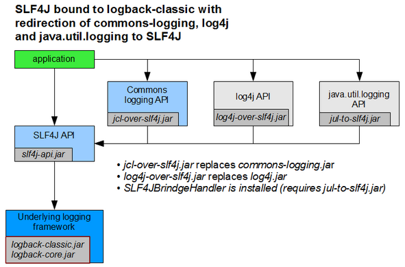

Prinzipien:
Dependency Injection (DI)
Aspektorientierte Programmierung (AOP)
Template-Method Pattern
Unresolved directive in complete.adoc - include::greeting.adoc[]
Was ist Spring?
Spring …
ist ein Framework (mehr als eine Bibliothek, kein Application Server)
benötigt nur JDK und einige Bibliotheken (jars)
kann fast überall integriert werden
kann fast alles integrieren

Entwicklung kann sich auf die Geschäftslogik fokussieren.
Die Infrastruktur kümmert sich um querschnittliche Themen, wie
Transaktionsmanagement
Security
Ausfallsicherheit
Skalierung
Persistenz
Validierung
Fremdsystemeinbindung
Einfachheit (Verwendung von POJOs)
Testbarkeit
Verbreitungsgrad
Einfache Integration
Viele fertige Bausteine
Lego-Prinzip
Prinzipien:
Dependency Injection (DI)
Aspektorientierte Programmierung (AOP)
Template-Method Pattern

Datum | Version | ab JDK | Neuigkeit |
2002 | - | - | Buch von Rod Johnson erschienen |
06/2003 | 0.9 | 3 | Erste Freigabe |
03/2004 | 1.0 | 3 | Offizielle 1.0 Freigabe |
10/2006 | 2.0 | 4 | XML-Namespaces, Autowiring |
11/2007 | 2.5 | 4 | SE6 + EE 5, Annotationen |
12/2009 | 3.0 | 5 | EL, Java-Config, REST |
12/2013 | 4.0 | 6 | Lambda-Ausdrücke |
09/2017 | 5.0 | 8 | Reactive Streams, WebFlux, Kotlin |
05/2019 | 5.1 | 8 | Java 11, Detailverbesserungen |
11/2022 | 6.0 | 17 | Java 17, Spring Boot 3, Jakarta EE 9 |
05/2023 | 6.0.9 | 17 | Fixes, Improvements |
xx.yy.zz
xx: Technologie-Version (Abhängigkeit zu JDK-Version)
yy: Feature-Release (mit API-Erweiterungen)
zz: Bugfix-Release (ohne API-Änderungen)
Initiatoren: Rod Johnson, Jürgen Höller
Apache 2.0 Lizenz
Herausgeber: Pivotal Software Inc.
Projekt Lead: Jürgen Höller
Projektseite: https://spring.io/projects/spring-framework
Sourcen: https://github.com/spring-projects/spring-framework

Jakarta EE (ehemals Java EE oder JEE), insb. CDI
Google Guice
Herausforderung


Typisch:
Durch Umgebung / Container bereitgestellt.
Application Server: Standardisierte API mit Service-Locator
Beispiel: JEE Container stellt Datenbank-Verbindung zur Verfügung

Typisch
Standalone / Keine Abhängigkeit von der Umgebung
Klasse der Application-Factory ist Startparameter
Wiederverwendbare Bibliothek zum Speichern von benutzerspezifischen Voreinstellungen:
public interface PreferencesService {
void savePreference(String key, String value);
String loadPreference(String key);
}Anwendungen müssen eine Referenz auf den PreferencesService bekommen
PreferencesService benötigt ID des aktuellen Users
Persistenzschicht muss zum Anwendungskontext passen
Wie kommt die Anwendung an den PreferencesService?
Wie kommt der PreferencesService an UserProvider und PreferencesRepository?
ServiceRegistry registry = ServiceRegistryFactory
.newInstance().getServiceRegistry();
@Override
public String loadPreference(String key) {
String userId = registry
.getUserProvider()
.getUserId();
return registry
.getPreferencesRepository()
.loadPreference(userId, key);
}private FxUserProvider userProvider;
private JdbcPreferencesRepository preferencesRepository;
private PreferencesServiceImpl preferencesService;
private void plumb() {
userProvider = new FxUserProvider();
preferencesRepository = new JdbcPreferencesRepository();
preferencesService = new PreferencesServiceImpl();
preferencesService.setUserProvider(userProvider);
preferencesService.setPreferencesRepository(preferencesRepository);
}Fragen?
Ablauf:
Auschecken
Bauen
Ausführen
GIT (Versionverwaltung) zum Auschecken
Maven zum Bauen
trainer@pc:~$ cd spring-2023.05
trainer@pc:~/spring-2020.07$ cd lesson02-setup
trainer@pc:~/spring-2020.07/lesson02-setup$ mvn clean package
[INFO] Scanning for projects...
...
[INFO] ------------------------------------------------------------------------
[INFO] BUILD SUCCESS
[INFO] ------------------------------------------------------------------------
[INFO] Total time: 2.156 s
[INFO] Finished at: 2021-07-22T09:55:50+01:00
[INFO] Final Memory: 18M/213M
[INFO] ------------------------------------------------------------------------trainer@pc:~/spring-2023.05/lesson02-setup$ mvn exec:java
[INFO] Scanning for projects...
[INFO]
[INFO] ------------------------------------------------------------------------
[INFO] Building lesson02-setup 1.0-SNAPSHOT
[INFO] ------------------------------------------------------------------------
[INFO]
[INFO] --- exec-maven-plugin:1.5.0:java (default-cli) @ lesson02-setup ---
Message: Hello World!
[INFO] ------------------------------------------------------------------------
[INFO] BUILD SUCCESS
[INFO] ------------------------------------------------------------------------
[INFO] Total time: 1.407 s
[INFO] Finished at: 2021-07-22T09:57:42+01:00
[INFO] Final Memory: 8M/243M
[INFO] ------------------------------------------------------------------------Holen Sie sich den Beispielcode zu diesem Training mit einem
git clone https://github.com/anderscore-gmbh/spring-2023.05
Wechseln Sie in das Verzeichnis lesson02-setup und
bauen Sie das Projekt mit mvn clean package.
Führen Sie das Projekt mit mvn exec:java aus.
Ablauf
Projekt mit IDE öffnen
Mit Sourcen vertraut machen
Anwendung ausführen
Importieren Sie das Projekt in eine Entwicklungsumgebung Ihrer Wahl und führen Sie damit die Anwendung aus.
Empfohlene IDE für diesen Workshop: → Spring Tools 4 for Eclipse
Alternativen:
public static void main(String[] args) {
GenericApplicationContext ctx = new GenericApplicationContext();
ctx.registerBean("greetingService", GreetingService.class,
() -> new GreetingService());
ctx.refresh();
GreetingService service = ctx
.getBean("greetingService", GreetingService.class);
System.out.println("Message: " + service.getGreeting());
}Was geschieht hier?
Was ist ein ApplicationContext?
Welche Möglichkeiten gibt es sonst noch, einen ApplicationContext anzulegen?
Was bewirkt die Methode refresh?
Welche Alternativen gibt es, an den GreetingService aus dem ApplicationContext heranzukommen?
Der ApplicationContext ist ein Container für Service-Objekte, den sogenannten Beans.
Er speichert diese Objekte bzw. deren Factories in einer Registry unter einem eindeutigen Namen, vergleichbar mit einer HashMap.
Beim Erzeugen von Objekten nutzt er diese Registry um Abhängigkeiten aufzulösen.
Nutzen den Debugger um sich den ApplicationContext zur Laufzeit anzusehen. |
Es gibt diverse Klassen, die das ApplicationContext-Interface implementieren, die wichtigsten sind:
ClassPathXmlApplicationContext für XML-Config
AnnotationConfigApplicationContext für Java-Config
StaticApplicationContext für Tests
Am flexibelsten ist der GenericApplicationContext, der über verschiedene AbstractBeanDefinitionReader
unterschiedliche Formate für die Context-Definition unterstützt.
Für Webapplikationen gibt es spezielle ApplicationContext Klassen:
XmlWebApplicationContext für XML-Config bei Webapps
AnnotationConfigWebApplicationContext für Java-Config bei Webapps
GenericWebApplicationContext ist das Gegenstück zu GenericApplicationContext für Webapps
refresh?Die Methode befüllt den ApplicationContext.
Die Methode sollte nur aufgerufen werden, wenn sie nicht bereits
durch den Konstruktor der jeweiligen ApplicationContext Klasse aufgerufen wird.
TrainingService aus dem ApplicationContext heranzukommen?Verwendung einer der getBean Methoden der ApplicationContext Schnittstelle
Definition einer weiteren Bean mit einer Abhängigkeit zum GreetingService
Problem
Die eingesetzen Bibliotheken verwenden verschiedene Logging-APIs
Einheitliche Logging Konfiguration an einer Stelle
Eine Logdatei für alle Logausgaben
Lösung
Ein Loggingframework besteht aus einer API und einer Engine
Eine Bridge ermöglicht den Einsatz einer Engine für fremde APIs
In der Regel genügt es, die richtigen Abhängigkeiten anzugeben

Java Util Logging (JUL) (JRE Bestandteil)
Apache Log4j 2™ (Logging Engine für diesen Workshop)
Simple Logging Facade for Java (SLF4J) (Logging API für diesen Workshop)
Apache Commons Logging ™ (JCL) (von Spring-Framework verwendet)
Logback (Default bei Spring-Boot)
Spring bringt seit Version 5 im Modul spring-jcl eine eigene
Logging-Bridge mit, die als Alternative zu jcl-over-slf4j
verwendet werden kann.
Diese unterstützt direkt Log4J 2 und JUL ohne zusätzliche Bridges.
Um JCL zu verwenden, muss man die Abhängigkeit zu spring-jcl exkludieren.
// BOM legt Versionen fest
compile 'org.apache.logging.log4j:log4j-bom:2.11.2'
// API für Log4J-2
compile 'org.apache.logging.log4j:log4j-api'
// Logger-Engine
compile 'org.apache.logging.log4j:log4j-core'
// API für SLF4J
compile 'org.apache.logging.log4j:log4j-slf4j-impl'
// Commons Logging Bridge
compile 'org.apache.logging.log4j:log4j-jcl'
// Commons Logging API
compile 'commons-logging:commons-logging'
// Adapater für JUL, benötigt -Djava.util.logging.manager=org.apache.logging.log4j.jul.LogManager
compile 'org.apache.logging.log4j:log4j-jul'Die Abhängigkeiten sind auf das notwendig Minimum reduziert:
// API für SLF4J
compile 'org.apache.logging.log4j:log4j-slf4j-impl:2.11.2'Über die Abhängigkeiten von log4j-slf4j-impl werden die Log4J2-Engine und die SLF4J-API eingebunden.
private static final Logger log = LoggerFactory.getLogger(MyClass.class);log.info("Ingendwas passiert");log.info("Schreibe {} bytes in Datei {}", size, file);log.error("Schief gegangen", ex);<?xml version="1.0" encoding="UTF-8"?>
<Configuration status="WARN" shutdownHook="disable">
<Appenders>
<Console name="Console" target="SYSTEM_OUT">
<PatternLayout pattern="%d{HH:mm:ss.SSS} [%t] %-5level %logger{36} - %msg%n"/>
</Console>
<File name="File" filename="target/app.log">
<PatternLayout pattern="%d{HH:mm:ss.SSS} [%t] %-5level %logger{36} - %msg%n"/>
</File>
</Appenders>
<Loggers>
<Root level="info">
<AppenderRef ref="Console"/>
<AppenderRef ref="File"/>
</Root>
<Logger name="setup" level="debug"/> <!-- Definiert Logger für Package 'setup' -->
</Loggers>
</Configuration>Stellen Sie das Root-Level der Logging-Konfiguration auf DEBUG.
Was besagen die Logausgaben von Spring, die Sie damit erhalten?
Bauen Sie eine Logausgabe in die main-Methode Ihrer Applikation ein.
Möglichkeiten, den Lebenszyklus einer Bean zu beeinflussen
Interfaces InitializingBean, DisposableBean und Lifecycle
JSR-250 Annotationen @PostConstruct und @PreDestroy
Explizite Angabe der init-method oder destroy-method per Konfiguration
Default Init/Destroy-Methoden (nur XML-Config)
public close/shutdown (nur JavaConfig), abschaltbar über @Bean(destroyMethod="")
Der ShutdownHook ist notwendig, damit der ApplicationContext sauber heruntergefahren wird.
ctx.registerShutdownHook();
In der Log4J 2 Konfiguration muss mit shutdownHook="disable"
verhindert werden, dass Log4J vor Spring beendet wird. |
mvn exec:java startet keine eigene VM, deshalb wird der Shutdown-Hook
nie augerufen. |
public class MyService implements InitializingBean, DisposableBean {
private static final Logger log = LoggerFactory.getLogger(MyService.class);
@Override
public void afterPropertiesSet() throws Exception {
log.info("service created");
}
@Override
public void destroy() throws Exception {
log.info("service destroyed");
System.out.println("service destroyed"); // falls Logging schon beendet wurde
}
}@PostConstruct
public void before() throws Exception {
log.info("service created");
}
@PreDestroy
public void after() throws Exception {
log.info("service destroyed");
}Dafür ist ein AnnotationConfigApplicationContext notwendig! |
Erweitern Sie den GreetingService so, dass er loggt,
wenn er vollständig initialisiert wurde und
wenn er zerstört wird.
Beachten Sie, dass registerShutdownHook() notwendig ist, damit der
ApplicationContext mitbekommt, wenn die Applikation beendet wird. |
Entwicklungsumgebung einrichten (Beispielanwendung auschecken, bauen und laufen lassen)
Verwendung der Spring-Dokumentation (Reference, API, Guides)
Logging konfigurieren
Wie erzeugt man einen ApplicationContext?
Lebenszyklus des ApplicationContext (registerShutdownHook)
Wie nutzt man einen ApplicationContext (Zugriff auf Beans)?
Was ist der ApplicationContext?
ApplicationContext mit dem Debugger untersuchen
Fragen?
Möglichkeiten den ApplicationContext zu konfigurieren:
XML
Annotationen
Java-Methoden
Lambda Ausdrücke (seit Spring 5)
… und jede Kombination davon!
Diskrete Simulation eines
einfachen Räuber-Beute-Modells
Es gibt nur Fische und Haie
Simuliert toroidalen
"Planeten" aus Wasser
Entspricht rechteckigem Spielfeld, das in
Zeilen und Spalten unterteilt ist und
dessen Ende mit dem Anfang verbunden ist
Eine Zelle ist von max. einem Wesen besetzt

Schwimmt zufällig auf angrenzendes Feld (sofern leer)
Vermehrt sich nach Ablauf einer bestimmten Zeit (Breed Time), indem neuer Fisch in angrenzendem Feld geboren wird
Bewegt sich nur horizontal oder vertikal
Regeln für einen Hai
Hai frisst Fisch auf einem angrenzenden Feld (falls vorhanden)
Verhungert nach Starve Time
Verhält sich ansonsten wie ein Fisch
private void plumb() {
Random rnd = ThreadLocalRandom.current();
torus = new SimpleTorus(60, 10);
FishStrategy fishStrategy = new FishStrategy();
fishStrategy.setBreedTime(3);
fishStrategy.setRnd(rnd);
fishStrategy.setTorus(torus);
SharkStrategy sharkStrategy = new SharkStrategy();
sharkStrategy.setBreedTime(5);
sharkStrategy.setRnd(rnd);
sharkStrategy.setStarveTime(4);
sharkStrategy.setTorus(torus);
worldEngine = WorldEngine.createPopulatedWorld(
0.3, // initial rate of fish per cell
0.1, // initial rate of shark per cell
rnd, // random base
torus, // the torus the creatures live in
new FishStrategy[]{fishStrategy, sharkStrategy}
);
}XML-Datei zur Konfiguration des ApplicationContext
Verdrahtung der Beans erfolgt über XML-Elemente
Vorteil: Klare Trennung von Implementierung und Verdrahtung
Nachteil: Medienbruch
Stammt aus den Anfängen der JEE
Sinnvoll in Kombination mit anderen XML-Konfigurationen
<?xml version="1.0" encoding="UTF-8"?>
<beans xmlns="http://www.springframework.org/schema/beans"
xmlns:xsi="http://www.w3.org/2001/XMLSchema-instance"
xsi:schemaLocation="http://www.springframework.org/schema/beans
http://www.springframework.org/schema/beans/spring-beans.xsd">
</beans>Die Definition
<bean id="firstCar" class="container.fragments.Car"/>
entspicht einem Constructor-Aufruf:
Car firstCar = new Car();
Zugriff erfolgt über:
ctx.getBean("firstCar", Car.class)Definition einer Bean mit 2 Aliasen:
<bean id="firstCar" name="bobbyCar,myCar"
class="container.fragments.Car"/>damit gilt:
ctx.getBean("firstCar") == ctx.getBean("bobbyCar")<bean id="engine" class="container.fragments.Engine">
<constructor-arg index="0" value="diesel"/>
<constructor-arg index="1" value="48"/>
</bean>entspricht:
Engine engine = new Engine("diesel", 48);<bean id="realCar" class="container.fragments.Car">
<property name="color" value="yellow"/>
<property name="engine" ref="engine"/>
</bean>entspricht:
Car realCar = new Car();
realCar.setColor("yellow");
realCar.setEngine(engine);<bean id="luxuryCar" class="container.fragments.Car">
<property name="color" value="black"/>
<property name="engine">
<bean class="container.fragments.Engine">
<constructor-arg value="gas"/>
<constructor-arg value="120"/>
</bean>
</property>
<property name="features">
<list>
<ref bean="aircon"/>
<bean class="container.fragments.Feature">
<constructor-arg value="radio"/>
</bean>
</list>
</property>
</bean>entspricht:
Car car = new Car();
car.setColor("black");
car.setEngine(new Engine("gas", 120));
car.setFeatures(Arrays.asList(aircon, new Feature("radio")));Attribute des 'bean' Elements 1/2
Siehe http://www.springframework.org/schema/beans/spring-beans.xsd.
Ist auch im Projekt lesson-03-container unter src/test/xsd abgelegt.
| Attribut | Beschreibung |
|---|---|
id | Name der Bean |
name | Aliases |
class | Bean-Klasse, bzw. Factory-Klasse |
factory-method | Methode zum Erzeugen einer Bean |
factory-bean | Name der Factory Bean |
init-method | Methode für Initialisierung |
destroy-method | Methoden für Aufräumarbeiten |
scope | 'singleton' (default) oder 'prototype' |
| Attribut | Beschreibung |
|---|---|
lazy-init | Initialisierung bei Bedarf |
depends-on | Explizite Abhängigkeit |
autowire | Abhängigkeiten automatisch verknüpfen |
autowire-candidate | Für Abhängigkeiten verwenden |
primary | Bevorzugte Alternative |
parent | Referenz auf Vorlage |
abstract | Ist Vorlage |
property, constructor-arg
| Attribut | Beschreibung |
|---|---|
name | Property-Name |
ref | Bean-Name |
value | Wert |
description, meta, bean, ref, idref, value, null, array, list, set, map, props
| Attribut | Beschreibung |
|---|---|
type | Argumenttyp |
index | Argumentindex |
name | Argumentname |
ref | Beanname |
value | Wert |
bean, ref, idref, value, null, array, list, set, map, props
| Attribut | Beschreibung |
|---|---|
value-type | Elementtyp |
description, bean, ref, idref, value, null, array, list, set, map, props
Beispiel zum Setzen von Properties:
<bean id="specialCar" class="container.fragments.Car">
<property name="properties">
<props>
<prop key="length">4.12</prop>
<prop key="height">1.68</prop>
</props>
</property>
</bean>Maps werden analog dazu mit <map> und <entry> Elementen aufgebaut.
Siehe auch den
entsprechenden Abschnitt in der Spring Referenzdokumentation.
<beans>
<import resource="services.xml"/> <!-- gleiches Verzeichnis -->
<import resource="resources/messageSource.xml"/> <!-- Unterverzeichnis resources -->
<import resource="/resources/themeSource.xml"/> <!-- führender '/' wird ignoriert -->
<bean id="bean1" class="..."/>
<bean id="bean2" class="..."/>
</beans>ApplicationContext ctx = new ClassPathXmlApplicationContext("car-context.xml");
Car car = ctx.getBean("firstCar", Car.class);Diese Aufgabe basiert auf der Methode plumb der Klasse WatorAppNoSpring.java im
Verzeichnis src/main/java/wator.
Verwenden Sie src/main/resources/context.xml als Grundgerüst.
Bilden Sie die Methode plumb mit einer XML-Konfiguration nach.
Sie benötigen dafür die Elemente bean, property und constructor-arg.
Kopieren Sie WatorAppNoSpring und ändern Sie die Methode plumb, so dass sie Ihre
XML-Konfiguration verwendet. Sie benötigen dafür die Klasse ClassPathXmlApplicationContext.
Details finden Sie in der Spring Framework Referenzdokumentation, Abschnitt 'The IoC Container'.
Java-Klasse zur Konfiguration des ApplicationContext
XML-Konfiguration wird mit Java-Syntax nachgebildet
Kein Medienbruch (Refactoring, Compiler erkennt Fehler)
Weniger Boilerplate
Trennung von Implementierung und Verdrahtung erfordert Disziplin
@Configuration
public class CarConfig {
// Bean mit Namen 'firstCar'
@Bean
Car firstCar() {
return new Car();
}
// Bean mit Name 'firstCar2' und Aliasen 'bobbyCar' und 'car2'
@Bean({"firstCar2", "bobbyCar", "car2"})
Car firstCar2() {
return new Car();
}
}// Ist Singleton, d. h. gibt es nur einmal!
@Bean
Engine engine() {
return new Engine("diesel", 48);
}
@Bean
Car realCar() {
Car car = new Car();
car.setColor("yellow");
car.setEngine(engine()); // Verdrahtung über Methode (Cache!)
return car;
}
@Bean
Car realCar2(Engine engine) { // Verdrahtung über Parameter
Car car = new Car();
car.setEngine(engine);
return car;
}Bgzl. Auflösung von Mehrdeutigkeiten siehe Dependency injection in @Bean method parameters.
@Bean
Feature aircon() {
return new Feature("air conditioning");
}
@Bean
Car luxuryCar() {
Car car = new Car();
car.setColor("black");
car.setEngine(new Engine("gas", 120));
car.setFeatures(List.of(aircon(), new Feature("radio")));
return car;
}| Annotation | Beschreibung |
|---|---|
@Configuration | Markiert eine Klasse als Konfigurationsklasse |
@Bean | Makiert eine Methode als Bean-Factory |
@Lazy | Bean wird nur bei Bedarf initialisiert |
@Nullable (bei Bean-Methode) | Bean darf |
@Scope | Legt den Scope einer Bean fest |
@Import | Abhängigkeiten aus anderer Config-Klasse importieren |
@ImportResource | Abhängigkeiten aus XML-Datei importieren |
ApplicationContext erzeugen und verwenden
ApplicationContext ctx = new AnnotationConfigApplicationContext(CarConfig.class);
Car car = ctx.getBean("firstCar", Car.class);Auch diese Aufgabe basiert auf der Methode plumb der Klasse WatorAppNoSpring.java im
Verzeichnis src/main/java/wator. Sie können auch Ihre vorherige Lösung als Gundlage verwenden.
Erstellen Sie die Klasse wator.config.WatorConfig
Bauen Sie die Methode plumb als Java-Config nach
Fertigen Sie eine weitere Kopie von WatorAppNoSpring und
verwenden Sie diesmal AnnotationConfigApplicationContext in der plumb Methode.
Motivation
Verdrahten von Beans erfordert viel Boilerplate (unübersichtlich, pflegeintensiv)
Oft ist Verdrahtung eindeutig
Per Reflection machbar
<bean autowire="…"> → Setzt Autowiring für diese Bean auf …
no → deaktivert
byName → Zuordnung über Property-Name
byType → Zuordnung über Property-Typ
constructor→ Zuordnung über Konstruktorargumente (Typ)
<bean autowire-candidate="false"> → Bean wird nicht für Autowiring verwendet
<beans default-autowire-candidates="*Repository, *Service"> →
Alle Beans mit dem entsprechenden Namensmuster werden für Autowiring verwendet
| Annotation | Beschreibung |
|---|---|
@Autowired | Befüllt Property über Autowiring |
@Nullable (bei Abhängigkeit) | Abhängigkeit darf |
@Required (deprecated) | Abhängigkeit notwendig (nur bei Setter sinnvoll) |
@Primary | Legt die bevorzugte Bean fest |
@Qualifier | Makiert eine Bean oder eine Abhängigkeit |
Bei Java-Config standardmäßig aktiviert
Bei XML-Config notwendig:
<context:annotation-config/>Es gibt 3 Arten von Autowiring. Am häufigsten wird diese Variante verwendet:
@Autowired
private Engine engine;
@Autowired
private List<Feature> features;Eher selten:
@Autowired
public void setEngine(Engine engine) {
this.engine = engine;
}
@Autowired
public void setFeatures(List<Feature> features) {
this.features = features;
}private final Engine engine;
private final List<Feature> features;
@Autowired
public CarConstructorWiring(Engine engine, List<Feature> features) {
this.engine = engine;
this.features = features;
}Nur sinnvoll in Kombination mit annotationsbasierter Konfiguration.
Für Muss-Parameter in Kombination mit final empfohlen.
@Bean
@Primary
Engine gasEngine() {
return new Engine("gas", 68);
}
@Bean
Engine dieselEngine() {
return new Engine("diesel", 72);
}
@Bean
Car car(Engine engine) {
var car = new Car();
car.setEngine(engine);
return car;
}Wird häufig für Tests verwendet.
@Bean
@Qualifier("gas")
Engine gasEngine() {
return new Engine("gas", 68);
}
@Bean
@Qualifier("diesel")
Engine dieselEngine() {
return new Engine("diesel", 72);
}
@Bean
Car car(@Qualifier("gas") Engine engine) {
var car = new Car();
car.setEngine(engine);
return car;
}@Qualifier kann auch in Kombination mit @Autowire verwendet werden.
Der Bean-Name ist immer auch ein Qualifier.
@Bean
Car car(@Nullable Engine engine) {
var car = new Car();
car.setEngine(engine);
return car;
}Ohne @Nullable wäre die Konfiguration fehlerhaft, solange es keine Engine gibt.
Ein @Autowired(required=false) hat die gleiche Wirkung.
Nutzen Sie Autowiring, um die Random und Torus Beans bei den beiden Strategies zu setzen.
Wann und durch wen wird das Autowiring durchgeführt? Verwenden Sie Setter-Autowiring und setzen Sie in dem Setter einen Breakpoint, um das herauszufinden.
Optional: Wie müssten Sie die WorldEngine ändern, um Autowiring verwenden zu können?
Das Verhalten des Containers kann durch spezielle Beans beeinflusst werden, die eines der folgenden Interfaces implementieren:
Nachbearbeitung aller Beans im Container, z. B. Auswertung von Annotationen
Nachbearbeitung des Containers, bevor Beans erzeugt werden
Implementierung einer eigenen Factory für eine Bean (nicht mit ObjectFactory verwechseln!)
Diese Interfaces werden vor allem Spring-intern verwendet, z. B. für den
AutowiredAnnotationBeanPostProcessor.
Implementierung
public class LoggingBeanPostProcessor implements BeanPostProcessor {
@Override
public Object postProcessBeforeInitialization(Object bean, String beanName) throws BeansException {
// Hier könnte man ein Stellvertreterobjekt zurückgeben, z. B. Proxy- oder
// Decorator
return bean;
}
@Override
public Object postProcessAfterInitialization(Object bean, String beanName) throws BeansException {
System.out.printf("after-init %12s: %s%n", beanName, bean);
return bean;
}
}Konfiguration
@Bean
static BeanPostProcessor postProcessor() {
return new LoggingBeanPostProcessor();
}Implementierung
public class LoggingBeanFactoryPostProcessor implements BeanFactoryPostProcessor {
@Override
public void postProcessBeanFactory(ConfigurableListableBeanFactory beanFactory) throws BeansException {
// Hier könnte man den Container ändern, bevor die ersten Beans erzeugt werden.
System.out.println("bean-factory: " + Arrays.toString(beanFactory.getBeanDefinitionNames()));
}
}Konfiguration
@Bean
static BeanFactoryPostProcessor factoryPostProcessor() {
return new LoggingBeanFactoryPostProcessor();
}Implementierung
public class CarFactoryBean implements FactoryBean<Car> {
final Car car = new Car();
{
car.setEngine(new Engine("electric", 50));
car.setColor("white");
}
@Override
public Car getObject() throws Exception {
return car;
}
@Override
public Class<?> getObjectType() {
return Car.class;
}
@Override
public boolean isSingleton() {
return true; // Default-Implementierung
}
}Konfiguration
@Bean
FactoryBean<Car> electricCar() {
return new CarFactoryBean();
}Implementieren Sie einen BeanPostProcessor, der zu jeder Bean den Namen und die
String-Repräsenation der Bean logged.
Binden Sie diesen BeanPostProcessor in die Wa-Tor Applikation ein.
Welchen Unterschied macht es, wenn Sie die Bean-Methode dazu mit static deklarieren?
Optional: Implementieren sie eine FactoryBean, welche Random bereitstellt.
Was ist das?
Aktivieren der annotationsbasierten Konfiguration
<beans xmlns=...>
<context:component-scan base-package="org.example"/>
...
</beans>@Configuration
@ComponentScan("org.example")
public class SomeConfig {
// ...
}Mit Component-Scanning werden zwangsläufig Annotationen ausgewertet.
Ein <context:annotation-config/> ist damit überflüssig.
| Annotation | Beschreibung |
|---|---|
@ComponentScan | Festlegung der Packages, die für annotationsbasierte Konfiguration herangezogen werden |
@Component (@Service, @Repository, @Controller) | Markiert eine Klasse als Bean |
@Value | Wertangabe mit den Features der XML-Config |
@Target({ElementType.TYPE})
@Retention(RetentionPolicy.RUNTIME)
@Documented
@Component (1)
public @interface Service {
/**
* The value may indicate a suggestion for a logical component name,
* to be turned into a Spring bean in case of an autodetected component.
* @return the suggested component name, if any (or empty String otherwise)
*/
@AliasFor(annotation = Component.class)
String value() default "";
}| 1 | @Service, @Repository und @Controller sind Annotationen, die selbst wiederum mit @Component annotiert sind. |
Zusammengesetzte Annotationen sind Meta-Annotation, die mit mehreren Annotationen annotiert sind.
@ComponentScan("org.example1")
@ComponentScan("org.example2") // ComponentScan ist Repeatable
@ComponentScan({"org.example1", "org.example2"})
@ComponentScan(value = {"org.example1", "org.example2"})
@ComponentScan(basePackages = {"org.example1", "org.example2"}) // sind alle äquivalent
@ComponentScan(basePackageClasses = BigDieselEngine.class) // robust gegen Refactorings@ComponentScan(basePackageClasses = BigDieselEngine.class,
excludeFilters = @Filter(type=FilterType.ANNOTATION, // default
classes = Service.class))
@ComponentScan(basePackageClasses = BigDieselEngine.class,
excludeFilters = @Filter(type = FilterType.ASSIGNABLE_TYPE,
classes = Umbrella.class))
@ComponentScan(basePackageClasses = BigDieselEngine.class,
excludeFilters = @Filter(type=FilterType.REGEX,
pattern=".*Umbrella"))
@ComponentScan(basePackageClasses = BigDieselEngine.class,
excludeFilters = @Filter(type=FilterType.ASPECTJ, // erfodert spring-aspects
pattern="*..Umbrella"))Über FilterType.CUSTOM kann man auch eine eigene Filter-Implementierung angeben.
Die ComponentScan Annotation bietet noch weitere Konfiurationsmöglichkeiten:
Include-/Exclude-Filter
Verwendung der Default-Filter (@Component, @Service, …) an-/abschalten
Generator für Bean-Namen
Lazy-Intialisierung der gefundenen Beans
Scope-Resolver
Proxies für Beans erzeugen
Für Details siehe Javadocs.
Löschen Sie in Ihrer Java-Config die beiden Bean-Methoden, welche die Beans für die FishStrategy und die SharkStrategy
erzeugen. Verwenden Sie stattdessen die Annotationen @ComponentScan und @Service.
Stellen Sie auch die WorldEngine auf annotationsbasierte Konfiguration um. Dafür sind mehrere Anpassungen notwendig:
Führen Sie Instanzvariablen für die Konfigurationswerte fishRate und sharkRate ein
Nutzen Sie Konstruktor-Autowiring für alle Abhängigkeiten
Initialisieren sie die WorldEngine über @PostConstruct oder das InitializingBean Interface.
JSR-330 | Spring | JSR-250 |
@Inject | @Autowired | @Resource |
@Named | @Component | @ManagedBean |
@Singleton | @Scope("singleton") | - |
@Named | @Qualifier | - |
Provider<T> | ObjectFactory<T> | - |
Stellen Sie die Wa-Tor Anwendung auf JSR-330 Annotationen um. Dafür sind folgende Anpassungen notwendig:
Maven-Abhängigkeit zu javax.inject:javax.inject:1 oder org.glassfish.hk2.external:jakarta.inject:2.6.1 ergänzen
Modul-Abhängigkeit für javax.inject bzw. jakarta.inject in module-info.java eintragen
Annotationen @Autowired und @Component durch @Inject und @Named ersetzen
Spring bietet die Abstraktionen TaskExecutor und TaskScheduler
TaskExecutor ist identisch zu java.util.concurrent.Executor
Für beide Interfaces liegen diverse Implementierungen vor
@EnableAsync und @EnableScheduling aktivieren eine Default-Konfiguration für asynchrone Ausführung
bzw. Hintergrundprozesse.
Mit @Async annotierten Bean-Methode werden asynchron ausgeführt
Mit @Scheduled annotierte Beans werden in regelmäßig im Hintegrund ausgeführt
Weitere Hinweise dazu finden Sie in der Spring Framework Referenzdokumentation, Abschnitt 'Task Execution and Scheduling'.
@Target(ElementType.TYPE)
@Retention(RetentionPolicy.RUNTIME)
@Import(SchedulingConfiguration.class)
@Documented
public @interface EnableScheduling {
}Die @Enable… Annotationen aktivieren diverse Spring-Features
Üblicherweise werden @Configuration Klassen damit annotiert,
möglich sind aber beliebige Bean-Klassen.
Es handelt sich dabei immer um Meta-Annotationen, die mit
@Import eine weitere Konfiguration einbinden.
@Role(BeanDefinition.ROLE_INFRASTRUCTURE)
public class SchedulingConfiguration {
@Bean(name = TaskManagementConfigUtils.SCHEDULED_ANNOTATION_PROCESSOR_BEAN_NAME)
@Role(BeanDefinition.ROLE_INFRASTRUCTURE)
public ScheduledAnnotationBeanPostProcessor scheduledAnnotationProcessor() {
return new ScheduledAnnotationBeanPostProcessor();
}
}Der ScheduledAnnotationBeanPostProcessor ist ein BeanPostProcessor, der die
@Scheduled Annotationen verarbeitet und die entsprechende Methode bei
einem TaskScheduler registriert.
@Scheduled(fixedDelay=5000) | Nach 5 Sek. erneut ausführen |
@Scheduled(fixedRate=5000) | Alle 5 Sek. ausführen |
@Scheduled(initialDelay=1000, fixedRate=5000) | Nach initialer Pause von 1 Sek. alle 5 Sek. ausführen |
@Scheduled(cron="*/5 * * * * MON-FRI") | An Wochentagen alle 5 Sek. ausführen |
@Scheduled(fixedDelay=5000)
public void doSomething() {
// something that should execute periodically
}Über fixedDelayString, fixedRateString und initialDelayString können die Werte auch als String
angegeben werden. Das ist notwendig, um die Werte von außen konfigurierbar zu machen.
Implementieren Sie eine Timer Bean, welche jede Sekunde
worldEngine.tick() und torus.dump(count) aufruft.
Binden Sie die Bean in die Wa-Tor Application ein und aktivieren Sie das Scheduling.
Löschen Sie den Aufruf der run() Methode aus Ihrer main-Klasse.
Sehen Sie sich die Logausgaben ihres BeanPostProcessor an.
Was hat sich im ApplicationContext geändert?
Analysieren Sie die Timer Bean mit dem Debugger.
Wer ruft die Methode mit der @Scheduled Annotation auf?

UI-Technologie für Desktop-Anwendungen
Als Nachfolger von Swing gedacht
Seit Java 11 kein Bestandteil des JDK mehr
Über Maven-Central (z. B. org.openjfx:javafx-controls:12) verfügbar
Erfordert Java 9 Modulsystem
Wird auf https://openjfx.io/ gepflegt
Ohne Modulsystem ist das JavaFX SDK notwendig
und die Anwendung muss mit
--module-path <path-to-sdk>/lib --add-modules=javafx.controls
aufgerufen werden.
Manchmal hat man auf die Erzeugung eines Objekts keinen Einfluss
(z. B. bei einer Java FX Applikationsklasse)
Dennoch ist Autowiring möglich:
ctx.getAutowireCapableBeanFactory().autowireBean(object);| Man kann auch eine Configuration-Klasse mit einer main-Methode ausstatten. Das ist für Mini-Programme nützlich, die nur aus einer Klasse bestehen. |
Die Klasse WritableImageTorus ist eine Torus-Implementierung,
bei der jede Zelle einem Pixel auf einer Bitmap entspricht.
Fische erscheinen als blaue Pixel und Haie als gelbe Pixel.
Die Applikation WatorAppFx zeigt diesen Torus an.
Prüfen Sie, ob die Anwendung WatorAppFx lauffähig ist
Erstellen Sie eine Kopie Ihrer Java-Config, die statt dem SimpleTorus
einen WritableImageTorus mit Auflösung 800 x 600 erstellt.
Ersetzten Sie die Methode plumb durch Verwendung eines
entsprechenden ApplicationContext.
Die Timer Bean aus der vorherigen Ausgabe funktioniert nicht
für den WritableImageTorus. Ergänzen Sie deshalb die @ComponentScan
Annotation um einen Exclude-Filter, der die Timer Bean ausschließt.
Nutzen Sie Autowiring, um torus und worldEngine
in WatorAppFx zu setzen.
| Beispiel | Beschreibung |
|---|---|
<import resource="base-config"/> | Import der Definitionen von einer anderen XML-Datei. Pfadangaben sind relativ zur importierenden Datei. |
@ImportResource("classpath:/base-config.xml") | Import der Definitionen aus einer XML-Datei in eine Java-Configuration |
@Import(BaseConfig.class) | Import der Definitionen aus einer anderen Java-Config |
@Configuration
@Import(BaseConfig.class)
public class MasterConfig {
// ...
}Lagern Sie gemeinsame Teile (Random, LogBeansPostProcessor) aus den beiden Java-Configs (für ursprüngliche Anwendung und für Fx-Anwendung) in eine WatorBaseConfig aus.
Verwenden Sie die @Import Annotation um die WatorBaseConfig in die beiden Java-Configs
einzubinden.
Fragen?
Themen
Zugriff auf Ressourcen
Konfiguration über eine Properties-Datei
Umschalten zwischen Konfigurationsdateien
Spring Expression Language
Spring Environment
Implementierung einer PropertySource
Flexible Konfiguration mittels Profilen
Verwendung der @Conditional Annotation
Was sind Ressourcen?
Ressourcen sind beliebige Dateien (Bilder, Schriften, Konfigurationsdateien, Daten, etc.)
java.net.URL hat Einschränkungen:
Kein Zugriff auf Ressourcen im classpath
Kein Zugriff auf Ressourcen relativ zu ServletContext
Keine Prüfung, ob Ressource existiert
Spring bietet eigene Abstraktion über das Resource Interface
public interface Resource extends InputStreamSource {
boolean exists();
URL getURL() throws IOException;
File getFile() throws IOException;
Resource createRelative(String relativePath) throws IOException;
String getFilename();
String getDescription();
...
}public interface InputStreamSource {
InputStream getInputStream() throws IOException;
}
| Präfix | Beispiel | Erklärung |
|---|---|---|
classpath: | classpath:com/myapp/config.xml | Aus dem classpath |
classpath*: | classpath*:META-INF/beans.xml | Alle META-INF/beans.xml im classpath |
file: | Datei /data/config.xml | |
http: | Als URL | |
(ohne) | com/myapp/config.xml | Abhängig vom |
| Die Resource Abstraktion kann man auch ohne den Rest von Spring verwenden. |
Ressource über ApplicationContext laden
Resource resource = ctx.getResource("classpath:config.properties");Resource per Dependency Injection
@Value("classpath:config.properties")
private Resource config;public class ResourceLoaderAwareBean implements ResourceLoaderAware, InitializingBean {
private ResourceLoader resourceLoader;
private Properties config;
@Override
public void setResourceLoader(ResourceLoader resourceLoader) {
this.resourceLoader = resourceLoader;
}
@Override
public void afterPropertiesSet() throws Exception {
Resource resource = resourceLoader.getResource("classpath:config.properties");
config = new Properties();
config.load(resource.getInputStream());
}
}Jede Bean, die ResourceLoaderAware implementiert erhält den ResourceLoader.
Nutzen Sie den ApplicationContext in WatorAppSimple, um die wator-prod.properties Datei
als Resource zu laden und geben Sie den Inhalt dieser Datei mit der Methode dumpProperties aus.
private void dumpProperties(InputStream is) throws IOException {
Properties props = new Properties();
props.load(is);
props.list(System.out);
}Motivation
Manche Konfigurationswerte sind
zum Entwicklungszeitpunkt noch nicht bekannt,
sind abhängig von der Laufzeitumgebung oder
müssen nachträglich änderbar sein.
Im Java-Umfeld werden dafür meistens Properties-Dateien verwendet.
Diese enthalten einfache Key-Value Paare:
server.port=8081 debug: true
| Man kann entweder '=' oder ': ' als Trenner zwischen Schlüssel und Wert verwenden. |
Bei Spring bindet man eine Properties-Datei über die @PropertySource Annotation ein:
@Configuration
@PropertySource("classpath:app.properties")
public class MyJavaConfig {
//...
}Das XML-Gegenstück ist:
<context:property-placeholder location="classpath:app.properties" />Platzhalter der Form ${key} werden in Annotationsparameter durch die
entsprechenden Property-Werte ersetzt.
Häufig wird das in Kombination mit der @Value Annotation verwendet:
@Value("${server.port}")
private int serverPort;
@Value("http://localhost:${server.port}/")
private String serverUrl;
@Bean
SomeService someService(@Value("${debug}") boolean debug) {In XML genügt es direkt die ${key} Platzhalter in Werten zu verwenden.
Man kann auch Platzhalter mit Defaultwerten definieren. Das lässt sich sogar schachteln:
@Value("${service.port:9080}")
private int servicePort;
@Value("${service.url:http://localhost:${service.port:9080}/}")
private String serviceUrl;Platzhalter lassen sich insbesondere auch für die @PropertySource verwenden:
@PropertySource("classpath:config-${platform:dev}.properties")| Damit sind unterschiedliche Konfigurationen für verschiede Plattformen möglich. |
Platzhalter-Werte können auch über Umgebungsvariablen oder System-Properties (-Dservice.port=5555) angegeben
werden, diese überschreiben ggf. entsprechende Werte aus Properties-Dateien. Dabei haben System-Properties
die höchste Priorität.
| Wie überall bei Java kommt es bei Properties auf Groß-/Kleinschreibung an! |
Bei älteren Spring-Versionen (vor 4.3) war es notwendig explizit einen PropertySourcesPlaceholderConfigurer
anzulegen, damit ${key} Platzhalter ersetzt wurden. Dieser musste im ApplicationContext vorhanden sein, bevor
der 1. Platzhalter zu interpretieren war, deshalb wurde er mit einer static Methode erzeugt:
@Bean
public static PropertySourcesPlaceholderConfigurer placeholderConfigurer() {
return new PropertySourcesPlaceholderConfigurer();
}Nicht mit dem veralteten PropertyPlaceholderConfigurer verwechseln! |
Ergänzen Sie die WatorBaseConfig um die @PropertySource Notation, so dass die wator-prod.properties
geladen wird.
Machen Sie die entsprechenden Werte über fish.breedTime, shark.breedTime und shark.starveTime
konfigurierbar. Die Defaultwerte sollen bestehen bleiben.
Konfigurieren Sie die Wiederholungsrate für den Timer mit der Property tick.millis. Sie müssen dafür
die Verzögerung über fixedDelayString statt über fixedDelay angeben.
Erstellen Sie eine Kopie wator-dev.properties der wator-prod.properties und sorgen Sie dafür,
dass man mit -Dplatform=dev zwischen den Konfigurationen umschalten kann.
Stellen Sie sicher, dass die Anwendung auch noch läuft, wenn Sie z.B. mit -Dplatform=none aufgerufen wird.
Sie müssen dafür bei der PropertySource ignoreResourceNotFound = true setzen.
Optional: Falls Sie noch Zeit haben, dann führen Sie die gleichen Änderungen bei der XML basierten Konfiguration durch. Sie benötigen dafür `<context:property-placeholder …/>'.
| Sie sehen die aktuellen Einstellungen beim Starten der Applikation in den Logausgaben. Dafür sorgt der LogBeansPostProcessor. |
Motivation
Für den Fall, dass einfache ${} Platzhalter nicht ausreichen,
bietet Spring eine sehr mächtige Expression Language.
Expressions werden genauso wie Platzhalter verwendet, aber haben
die Form #{}, z. B. #{ 1 + 1 }.
Man kann auch Platzhalter in Expressions verwenden,
beispielsweise: #{ ${service.port} + 1 }.
@Value("#{ 'http://localhost:' + (${server.port} + 1) }") String urlValue,
@Value("#{ T(java.lang.Math).random() * 100.0 }") double randomValue,
@Value("#{ someService.serviceValue }") int beanProperty,
@Value("#{ systemProperties['service.port'] ?: 8888 }") int systemProperty, // Elvis Operator
@Value("#{ {1, 3, 5, 7} }") List<Integer> listValue,
@Value("#{ {banane: 'gelb', tomate: 'rot', gurke: 'grün'} }") Map<String, String> mapValue,
@Value("#{ new int[]{3,2,1} }") int[] arrayValue, @Value("#{ 'abcde'.substring(1, 4) }") String subStringNutzen Sie EL-Ausdrücke, um die Werte folgendermaßen zu setzen:
sharkBreedTime = fishBreedTime * 2 sharkStarveTime = fishBreedTime * 2 - 2
Für die fishBreedTime soll zusätzlich gelten:
fishBreedTime =
Wert aus der Property fish.breedTime falls gesetzt
Andernfalls: Zufallswert zwischen 2 und 20Wie hätten Sie diese Aufgabe ohne Expression-Language gelöst?
Hintergrund
Das Environment ist die Quelle für Platzhalter-Werte.
Statt über die @Value Annotation kann man das
Environment auch direkt verwenden:
@Autowired
private Environment env;Zum Zugriff auf die Werte bietet Environment verschiedene getProperty Methoden, z.B. mit Typ und Defaultwert:
int port = env.getProperty("service.port", Integer.class, 8079);| Gegenüber der Expression Language bietet der direkte Zugriff auf das Environment den Vorteil, dass Syntaxfehler direkt vom Compiler erkannt werden. |
Die Reihenfolge der Property Sources bestimmt die Priorität (der Erste gewinnt).
public class SimpleMapPropertySource extends PropertySource<Map<String, Object>> {
public SimpleMapPropertySource(String name, Map<String, Object> source) {
super(name, source); (1)
}
@Override
public Object getProperty(String name) { (2)
return source.get(name);
}
}| 1 | Jede PropertySource hat einen Namen und Optional eine Quelle für die Propertywerte |
| 2 | Die getProperty() Methode muss auf jeden Fall implementiert werden |
SimpleMapPropertySource propertySource = new SimpleMapPropertySource("simple-map", map);
AnnotationConfigApplicationContext ctx = new AnnotationConfigApplicationContext(); (1)
ctx.getEnvironment().getPropertySources().addLast(propertySource); (2)
ctx.register(AppConfig.class);
ctx.refresh(); (3)| 1 | Keine Konfiguration angeben, um refresh() zu verhindern |
| 2 | Registriert propertySource als letztes, d.h. mit niedrigster Priorität |
| 3 | Mit refresh() wird der ApplicationContext initialisiert |
| @PropertySource’s in der Konfiguration werden beim Refresh hinzugefügt! |
Nutzen Sie nun das Environment, um die beiden Strategies zu konfigurieren.
Die Applikation soll sich genauso wie nach Aufgabe 2 verhalten.
Implementieren Sie eine RandomPropertySource, die für jede der 3 Strategy-Properties einen Zufallswert zwischen 1 und 100 zurückliefert und binden Sie diese RandomPropertySource ein.
Einsatz von @Profile
Unterschiedliche Umgebungen (Produktion, Entwicklung) erfordern unterschiedliche Konfiguration.
Profile kommen zum Einsatz, wenn Einstellungen (Konfigurationswerte) nicht ausreichen.
Mit der Annotation @Profile("profilname") legt man fest, dass eine Konfiguration nur gelten
soll, wenn das entsprechende Profil aktiviert ist.
Die @Profile Annotation kann man sowohl auf eine ganze (Konfigurations-)Klassen als auch auf
einzelne Bean-Methoden anwenden.
Profile lassen sich mit & (und), | (oder), ! (Negation) und Klammern verknüpfen:
@Profile("production & (us-east | eu-central)")Man kann mehrere Profile gleichzeitig aktiveren, entweder programmatisch:
ctx.getEnvironment().setActiveProfiles("profile1", "profile2");Oder über die spring.profiles.active Property, z. B. mit:
-Dspring.profiles.active="profile1,profile2"
Wenn kein Profil aktiviert wurde, dann ist immer das default Profil aktiv.
@Profile@Target({ElementType.TYPE, ElementType.METHOD})
@Retention(RetentionPolicy.RUNTIME)
@Documented
@Conditional(ProfileCondition.class) (1)
public @interface Profile {
String[] value();
}| 1 | @Profile ist eine Metaannotation, für @Conditional(ProfileCondition.class). |
Mit @Conditional kann man die Registrierung einer Konfiguration oder einer Bean mit einer
Bedingung (Condition) verknüpfen.
ProfileConditionclass ProfileCondition implements Condition {
@Override
public boolean matches(ConditionContext context, AnnotatedTypeMetadata metadata) { (1)
MultiValueMap<String, Object> attrs = metadata
.getAllAnnotationAttributes(Profile.class.getName());
if (attrs != null) {
for (Object value : attrs.get("value")) {
if (context.getEnvironment()
.acceptsProfiles(Profiles.of((String[]) value))) {
return true;
}
}
return false;
}
return true;
}
}| 1 | Die matches Methode ist die einzige Methode, die jede Condition implementieren muss. |
Ändern Sie die WatorFxConfig so, dass dort 2 verschiedene WritableImageTorus Beans
in unterschiedlichen Größen erstellt werden. Nutzen Sie dafür die Profile big
und default.
Optional: Implementieren Sie eine Annotation @Big nebst zugehöriger Condition, so dass Sie @Profile("big") durch @Big und @Profile("default") durch @Big(false) ersetzen können.
ApplicationContext Konfiguration
XML-Config
Java-Config
Annotationsbasierte Konfiguration
Externe Konfiguration
Zugriff auf Ressourcen
Konfigurationswerte angeben und auswerten
Spring Expression Language
Environment
Profile und Conditional
Fragen?
Wie könnte Sie Spring beim Testen unterstützen?
Bibliotheken und Frameworks für Testentwicklung mit Spring:
JUnit 4/5
AssertJ
Spring Test
Mockito
Notwendige Abhängigkeit:
testCompile 'org.junit.jupiter:junit-jupiter-api:5.6.0'
Beispiel:
package testing.fragments;
import org.junit.jupiter.api.Test;
import static org.junit.jupiter.api.Assertions.assertEquals;
public class JUnit5Test {
@Test
public void testOnePlusOne() {
assertEquals(2, 1 + 1, "strange arithmetic");
}
}Notwendige Abhängigkeit:
testCompile 'org.assertj:assertj-core:3.15.0'
Verwendeter Import:
import static org.assertj.core.api.Assertions.assertThat;
Beispiel:
assertThat(1 + 1).as("adding").isEqualTo(2);Notwendige Abhängigkeit:
testCompile 'org.springframework:spring-test:5.3.6'
Enthält die Packages:
org.springframework.mock
org.springframework.test
org.springframework.test:AopTestUtils | AOP-Utilities zum Zugriff auf Objekt hinter einem Proxy |
AssertionErrors | Assertions unabhängig von JUnit |
JsonExpectationsHelper | Assertions zum Vergleich von JSON-Strings |
JsonPathExpectationsHelper | Prüfung von JSON-Inhalten mittels JSON-Path Ausdrücken |
XmlExpectationsHelper | Assertions zum Vergleich von XML-Inhalten oder XML-Eigenschaften |
XpathExpectationsHelper | Prüfung von XML-Inhalten mittels XPath-Ausdrücken |
MetaAnnotationUtils | Zugriff Annotationen hinter Metaannotationen |
ReflectionTestUtils | Zugriff auf private Variablen/Methoden |
Beans haben private Variablen, die nur per DI befüllt werden.
Getter und Setter sind in der Regel nicht vorhanden.
Für Unittests müssen diese befüllt werden.
Man kann mit Java-Bordmitteln per Reflection auf private Variablen zugreifen:
Field breedTimeField = FishStrategy.class.getDeclaredField("breedTime");
breedTimeField.setAccessible(true);
breedTimeField.set(fishStrategy, 99);Die ReflectionTestUtils bietet diverse getField und setField Methoden zum
Zugriff auf private Variablen:
ReflectionTestUtils.setField(someObject, "fieldname", newValue);
Object value = ReflectionTestUtils.getField(someObject, "fieldName");Bearbeiten Sie die Aufgaben in SpringUnitTests:
Unit Test ausführen (positives und negatives Ergebnis prüfen)
Zugriff auf private Variable per Reflection
Verwendung von ReflectionTestUtils
Was versteht man unter Mocking? Wofür ist das gut?
Mocking dient dazu,
Objekte durch Platzhalter zu ersetzen,
die ein bestimmtes Verhalten zeigen
Notwendige Abhängigkeit:
testCompile 'org.mockito:mockito-core:3.3.0'
Verwendung:
import static org.mockito.Mockito.*; // Importiert statische Methoden der Klasse Mockito
Torus mockTorus = mock(Torus.class); // Erzeugt Mock-Objekt, das Torus implementiert
when(mockTorus.getWidth()).thenReturn(300); // Gib 300 zurück, wenn getWidth()
// aufgerufen wird
verify(mockTorus).setFishAt(10, 20, null); // Prüfe, ob setFishAt(10, 20, null)
// aufgerufen wurdeSpring stellt einige Klassen bereit, die als Mockobjekte in Tests
verwendet werden können.
Diese befinden sich alle in den Subpackages
von org.springframework.mock.
Sie dienen dem Mocking von:
Environment (MockEnvironment)
PropertySource (MockPropertySource)
JNDI
HTTP-Kommunikation (u. a. Servlet-API)
Bearbeiten Sie die Aufgabe im FishStrategyTest:
Prüfen, ob das Verschieben eines Fisches auf dem Torus prinzipiell korrekt erfolgt
Falls Sie noch Zeit haben, können Sie folgendes probieren:
Verschieben testen, wenn Nachbarzelle bereits belegt ist
Vermehrung eines Fisches testen
Warnung vor dem Mock!
Mocking ist
aufwendig
pflegeintensiv (bei Schnittstellenänderungen)
fehleranfällig (Schnittstellenverhalten falsch simuliert)
⇒ Es kommt eben immer auf die richtige Dosis an
Motivation
Integrationstests prüfen das Zusammenspiel mehrerer Klassen.
Spring-Anwendungen benötigen in der Regel einen speziellen Test-ApplicationContext.
Das Testframework von Spring dient dazu, diesen bereitzustellen.
@RunWith(SpringRunner.class)
@ContextConfiguration(classes = WatorConfig.class)
public class SpringJUnit4Test {
@Inject
private Torus torus;
@Test
public void testInjectionWorks() {
assertThat(torus).isNotNull();
}
}Statt SpringRunner kann auch SpringJUnit4ClassRunner verwendet werden.
@SpringJUnitConfig(WatorConfig.class)
public class SpringJUnit5Test {
@Inject
private Torus torus;
@Test
void testInjectionWorks() {
assertThat(torus).isNotNull();
}
}Die Annotation SpringJUnitConfig ist eine Meta-Annotation:
@ExtendWith(SpringExtension.class)
@ContextConfiguration
@Documented
@Inherited
@Retention(RetentionPolicy.RUNTIME)
@Target(ElementType.TYPE)
public @interface SpringJUnitConfig {Sowohl fast alle JUnit Jupiter Annotationen als auch fast alle Spring Annotionen können
für Meta-Annotationen verwendet werden.
D.h. man kann eigene Annotionen aus diesen Meta-Annotionen zusammensetzen.
@SpringJUnitConfig ist so eine zusammengesetzte Annotation
Man könnte den SpringJUnit5Test auch so implementieren:
@ExtendWith(SpringExtension.class)
@ContextConfiguration(classes=WatorConfig.class)
public class SpringJUnit5Test {
// ...
}JUnit 5 Extensions implementieren entsprechende Lifecyle-Interfaces:
public class SpringExtension implements BeforeAllCallback, AfterAllCallback, // ...
{
// ...
@Override
public void beforeAll(ExtensionContext context) throws Exception {
getTestContextManager(context).beforeTestClass();
}
// ...
}ApplicationContext aus dem Wurzelvereichnis des classpath laden:
@ContextConfiguration(locations={"/app-config.xml", "/test-config.xml"})Alternativen:
@ContextConfiguration({"/app-config.xml", "/test-config.xml"})
@ContextConfiguration("/test-config.xml")
@ContextConfiguration("test-config.xml")
@SpringJUnitConfig(locations={"/app-config.xml", "/test-config.xml"})ApplicationContext über Java-Config erstellen:
@ContextConfiguration(classes = {AppConfig.class, TestConfig.class})Alternativen:
@ContextConfiguration(classes = TestConfig.class)
@SpringJUnitConfig(classes = {TestConfig.class})
@SpringJUnitConfig({TestConfig.class})Bei @ContextConfiguration ist locations der Default,
bei @SpringJUnitConfig dagegen classes. |
Eine @ContextConfiguration oder @SpringJUnitConfig ohne Parameter
in einer Testklasse mit dem Namen MyTest entspricht:
@ContextConfiguration("MyTest-config.xml")Wenn es diese XML-Datei nicht gibt, wird nach einer mit @Configuration annotierten
static Innerclass gesucht:
@SpringJUnitConfig
public class MyTest {
@Configuration
static class Config {
// ...
}
// ...
}Diese Innerclass kann selbst wiederum mit Annotationen versehen werden.
@SpringJUnitConfig
public class MyTest {
@Configuration
@Import(SampleConfig.class)
@ComponentScan
static class Config {
// ...
}
// ...
}Tests kann man konfigurieren mit:
@TestPropertySource
@ActiveProfiles
@EnabledIf, @DisabledIdf (nur JUnit 5)
Beispiele (Testklassen-Annotation):
@TestPropertySource("classpath:/test.properties")
@TestPropertySource("/test.properties")
@TestPropertySource("file:${user.home}/test.properties")
@TestPropertySource(properties = { "timezone = GMT", "port: 4242" })Beispiele (Testklassen-Annotation):
@ActiveProfiles("dev")
@ActiveProfiles({"dev", "integration"})Beispiele (anwendbar auf Testmethoden und Testklassen):
@EnabledIf("#{systemProperties['os.name'].toLowerCase().contains('mac')}")
@DisabledIf("${smoke.tests.disabled}")
@EnabledIf("true")Ein Kontext-Test prüft, ob der ApplicationContext geladen werden kann.
Der ApplicationContext sollte möglichst der produktiven Umgebung entsprechen.
So ein Test ist hilfreich bei der Fehlersuche.
Bearbeiten Sie die Aufgaben im ConfigurationTest
Properties in eine Properties-Datei auslagern
Profil 'dev' aktivieren
Ändern Sie den WatorApplicationContextTest so, dass er die XML-basierte Konfiguration testet.
Context-Cache
Da es sehr Zeitintensiv sein kann, den ApplicationContext aufzubauen, verwendet Spring einen Context-Cache.
Die eindeutige Kombination von Konfigurationsparametern wird verwendet, um einen Schlüssel zu generieren, unter dem der Kontext gecached wird. Diese sind u.a.:
locations (from @ContextConfiguration)
classes (from @ContextConfiguration)
activeProfiles (from @ActiveProfiles)
propertySourceLocations (from @TestPropertySource)
propertySourceProperties (from @TestPropertySource)
| Es können Seiteneffekte auftreten, wenn eine VM mehrere Tests auf einmal ausführt, z.B. beim Jenkins Build |
Context-Cache wird in einer static Variablen gespeichert, also je VM.
Die Größe kann über die System-Property spring.test.context.cache.maxSize
festgelegt werden, Standard ist 32.
Über @DirtiesContext kann man erzwingen, dass der Context für einen
Test verworfen wird.
@TestExecutionListeners registriert einen TestExecutionListener,
dessen Callbacks in verschiedenen Phasen der Testausführung aufgerufen werden.
Einige TestExecutionListener registriert Spring standardmäßig,
z.B. den DirtiesContextTestExecutionListener zur Behandlung von @DirtiesContext.
Folgende Annotationen laden einen WebApplicationContext statt einem ApplicationContext:
@WebAppConfiguration
@SpringJUnitWebConfig (nur JUnit 5)
Beispiel (anwendbar auf Testmethoden und Testklassen):
@Sql({"/test-schema.sql", "/test-user-data.sql"})Mit @Commit und @Rollback kann man das Transaktionsverhalten eines Tests steuern.
Sie sind anwendbar auf eine Testklasse oder eine einzelne Methode.
Standardmäßig rollt das Testframework jede Transaktion zurück.
Mit @BeforeTransaction oder @AfterTransaction kann man Callback-Methoden definieren,
um sich in die Transaktionsverarbeitung einzuklinken.
Die Annotation @Primary ist keine Test-Annotation, aber Sie ist besonders
für Tests nützlich, um mit einer Testkonfiguration eine vorhandene Bean zu
ersetzen.
Bevor man eine neue API verwendet, sollte man immer mit Learning-Tests prüfen, ob diese sich so verhält, wie man das erwartet.
Bei späteren API-Updates decken diese Tests frühzeitig Unterschiede auf.
Ergründen Sie mit Learning-Tests das Verhalten der Annotationen @Primary, @Qualifier
und @Nullable und beantworten Sie die folgenen Fragen:
Was passiert, wenn eine Bean nicht eindeutig über den Typ zugeordnet werden kann? Welche Möglichkeiten haben Sie, einer Bean den Vorzug zu geben?
Was passiert, wenn keine entsprechende Bean vorhanden ist?
Was ist der Unterschied zwischen @Bean(name="bla"), @Qualifier("bla") und @Named("bla")?
Was bewirkt @Scope("prototype")? Wofür könnte das gut sein?
Verwenden Sie LearningTest im Package testing.learning als Vorlage.
Fragen?
Wie funktioniert der Datenbankzugriff mit Java?
Themen
Einführung in HSQLDB
JdbcTemplate und JdbcDaoSupport
Exception Handling
Connection Pools
TransactionTemplate
Deklarative Transaktionen
HSQLDB in Stichworten
Freie, vollständig in Java programmierte relationale SQL-Datenbank
Bestandteil von OpenOffice und LibreOffice
Sehr schlank (nur ein JAR)
Als In-Memory-Datenbank verwendbar (nützlich für Tests)
Alternative: H2
Notwendige Abhängigkeit:
compile 'org.hsqldb:hsqldb:2.4.1'
Datenbankverbindung aufbauen:
String jdbcUrl = "jdbc:hsqldb:mem:mymemdb"; // In-Memory-Datenbank mit Name 'mymemdb'
Class.forName("org.hsqldb.jdbc.JDBCDriver");
Connection connection = DriverManager.getConnection(jdbcUrl, "SA", "");JDBC-URL für Standalone Datenbank:
jdbc:hsqldb:file:build/standalonedb
Aufruf:
java -cp hsqldb-2.4.1.jar org.hsqldb.server.Server --database.0 file:mydb --dbname.0 xdb
JDBC-URL:
jdbc:hsqldb:hsql://localhost/xdb
Aufruf:
java -cp hsqldb-2.4.1.jar org.hsqldb.util.DatabaseManagerSwing
Mögliche Alternativen:
Datenbankmanagement-Tool der jeweiligen IDE
Starten Sie einen HSQLDB-Server und lassen Sie die tx.hsql.AccessDbTests laufen.
Verwenden Sie das hsqldb-server Projekt |
Verbinden Sie sich mit einem Datenbank Management Tool und führen Sie damit folgendes SQL-Statement aus:
select 1 + 1, current_timestamp from (values(0))Wo liegen die Datenbank-Dateien der Datenbank, die Sie soeben angelegt haben?
Datenbankzugriff per JDBC
String sql = "select ? + 1 from (values(0))";
try (PreparedStatement stmt = connection.prepareStatement(sql)) {
stmt.setInt(1, 3);
try (ResultSet rs = stmt.executeQuery()) {
assertThat(rs.next()).isTrue();
assertThat(rs.getInt(1)).isEqualTo(4);
}
}Entwurfsmuster: Template-Method
Vereinfacht die Ausführung von JDBC-Statements
Mapping von Abfrageergebnissen auf Java-Objekte
Übersetzt SQLExceptions auf einheitliche Exception-Hierarchie
Alternativen:
NamedParameterJdbcTemplate
SimpleJdbc Klassen, z. B. SimpleJdbcInsert
Verwendung:
String sql = "select ? + 1 from (values(0))";
Integer result = jdbcTemplate.queryForObject(sql, Integer.class, 3);
assertThat(result).isEqualTo(4);Implementieren Sie die verschiedenen Schritte eines vollständigen
CRUD-Tests (Create, Read, Update, Delete) aus, indem Sie die Aufgaben
in tx.jdbc.JdbcTemplateTests lösen.
Führen Sie den Test mit verschiedenen DataSources aus. Die DataSourceConfig
bietet dafür mehrere Konfigurationen, die Sie über Profile auswählen können.
Debuggen Sie den Test und prüfen Sie nach jedem Schritt die Änderung in der Datenbank.
Entwurfsmuster: Data Access Object
Abstrakte Basisklasse
Zusätzliche Kapselung der Framework-Klassen
Zugriff auf DataSource, JdbcTemplate und Connection
Einschränkung: nur Setter-Injection
Nachfolgend soll die Logik zur Persistierung von Personen in ein eigenes DAO verschoben werden.
Lassen Sie die Klasse PersonDaoImpl die Klasse JdbcDaoSupport erweitern.
Welche zusätzliche Funktionalität erhalten Sie dadurch?
Implementieren Sie die Methodenrümpfe des DAOs.
Hierzu können Sie sich an den JdbcTemplateTests orientieren.
Passen Sie die eingebettete Konfiguration im PersonDaoTest so an, dass das PersonDao
korrekt konfiguriert wird.
Quellen für Exceptions
JPA
Hibernate
JDBC (z.B. SQLException)
Datenbanktreiber
Checked vs. Runtime Exceptions
Ziel: einheitliche Hierarchie von Runtime Exceptions
Automatisches Mapping
DataAccessException
DataIntegrityViolationException: Verletzung von Constraints
DuplicateKeyException: Verletzung von Schlüssel-Constraints
EmptyResultDataAccessException: Leere Ergebnismenge
TypeMismatchDataAccessException: Fehler beim Mapping

Interaktion mit einer Datenbank
Initialisieren einer Connection durch JdbcDriver
Aufbau einer TCP-Verbindung
Login
Ausführen von Query bzw. Statement
Logout
Schließen der TCP-Verbindung
Schließen der Connection
Auf- und Abbau von Datenbankverbindungen ist teuer!
Wiederverwendung von Connections
Konfiguration als DataSource
Implementierungen
Apache Commons DBCP: BasicDataSource
HikariCP: HikariDataSource
C3P0: ComboPooledDataSource
Tomcat JDBC Connection Pool: DataSource
Wichtige Optimierungsparameter
# Verbindungen initial
# Verbindungen maximal
BasicDataSource ds = new BasicDataSource();
ds.setDriverClassName("org.hsqldb.jdbc.JDBCDriver");
ds.setUrl(jdbcUrl);
ds.setUsername("SA");
ds.setPassword("");
ds.setInitialSize(1);
ds.setMaxTotal(10); HikariConfig config = new HikariConfig();
config.setJdbcUrl(jdbcUrl);
config.setUsername("SA");
config.setPassword("");
config.setMaximumPoolSize(10);
config.addDataSourceProperty("cachePrepStmts", "true");
config.addDataSourceProperty("prepStmtCacheSize", "250");
config.addDataSourceProperty("prepStmtCacheSqlLimit", "2048");
HikariDataSource ds = new HikariDataSource(config);Setzen Sie in der DataSourceConfig zwei Connection Pools auf Basis von Apache Commons DBCP und HikariCP auf, welche
über entsprechende Profile aktiviert werden können. Beschränken Sie die Pools auf maximal 10 zeitgleiche Verbindungen.
ACID Eigenschaften von Transaktionen:
Atomicity (Abgeschlossenheit)
Consistency (Konsistenzerhaltung)
Isolation (Abgrenzung)
Durability (Dauerhaftigkeit)
Ausgangssituation: Konkurrierende Ausführung zweier Transaktionen A und B
Dirty Read: A liest nicht commitete Werte von B
Non-repeatable Read: A liest andere Werte nach Commit von B
Phantom Read: A liest zusätzliche Zeilen nach Commit von B
Lost Update: A überschreibt Änderungen von B
connection.setAutoCommit(false);
// do something here ...
connection.commit();Implementierungen von PlatformTransactionManager:
DataSourceTransactionManager
JpaTransactionManager
HibernateTransactionManager
JtaTransactionManager (verteilte Transaktionen)
benötigt JTA-Umgebung (Application-Server) oder
JTA-Implementierung (z. B. Atomikos, Bitronix)
void executeTx() {
Integer result = transactionTemplate.execute(this::withinTx);
assertThat(result).isEqualTo(2);
}
private Integer withinTx(TransactionStatus status) {
return jdbcTemplate.queryForObject("select 1 + 1 from (values(0))", Integer.class);
}Fügen Sie in der Konfiguration für TransactionTemplateTests Beans für
DataSourceTransactionManager und TransactionTemplate hinzu.
Führen Sie den Test mit dem Debugger aus und halten Sie ihn nach dem ersten Insert an. Prüfen Sie den Inhalt der Tabelle person.
Was genau passiert beim Ausführen von insertWithConflict?
Man kann Transaktionsgrenzen auch deklarativ (d. h. mit @Transactional) angeben:
@EnableTransactionManagement ist notwendig, um deklarative Transaktionen zu aktivieren
@Transactional
an Klasse oder Methode
erfordert JDK DynamicProxy (Default), CGLIB oder AspectJ
Automatisches Commit sowie Rollback bei Runtime Exceptions
Alternative Implementierungen (weitgehend austauschbar):
Spring: org.springframework.transaction.annotation.Transactional
EJB: javax.transaction.Transactional
@Target(ElementType.TYPE)
@Retention(RetentionPolicy.RUNTIME)
@Documented
@Import(TransactionManagementConfigurationSelector.class) (1)
public @interface EnableTransactionManagement {
boolean proxyTargetClass() default false;
boolean proxyTargetClass() default false;
AdviceMode mode() default AdviceMode.PROXY; (2)
int order() default Ordered.LOWEST_PRECEDENCE;
}| 1 | Enable Annotationen importieren immer irgendwelche Konfigurationsklassen |
| 2 | AdviceMode.PROXY oder AdviceMode.ASPECTJ |
TransactionManagementConfigurationSelector implementiert ImportSelector
protected String[] selectImports(AdviceMode adviceMode) {
switch (adviceMode) {
case PROXY:
return new String[] {AutoProxyRegistrar.class.getName(),
ProxyTransactionManagementConfiguration.class.getName()};
case ASPECTJ:
return new String[] {
TransactionManagementConfigUtils.TRANSACTION_ASPECT_CONFIGURATION_CLASS_NAME};
default:
return null;
}
}Importiert Konfigurationsklasse, abhängig von dem mode Parameter bei @EnableTransactionManagement.
@Configuration
public class ProxyTransactionManagementConfiguration
extends AbstractTransactionManagementConfiguration {
@Bean(name = TransactionManagementConfigUtils.TRANSACTION_ADVISOR_BEAN_NAME)
public BeanFactoryTransactionAttributeSourceAdvisor transactionAdvisor() {...}
@Bean
public TransactionAttributeSource transactionAttributeSource() {
return new AnnotationTransactionAttributeSource();
}
@Bean
public TransactionInterceptor transactionInterceptor() {...}
}Verwendet AOP, um Transaktionsverwaltung hinzuzufügen.
public @interface Transactional {
@AliasFor("transactionManager")
String value() default "";
@AliasFor("value")
String transactionManager() default "";
Propagation propagation() default Propagation.REQUIRED;
Isolation isolation() default Isolation.DEFAULT;
int timeout() default -1;
boolean readOnly() default false;
Class<? extends Throwable>[] rollbackFor() default {};
String[] rollbackForClassName() default {};
Class<? extends Throwable>[] noRollbackFor() default {};
String[] noRollbackForClassName() default {};
}Konfiguration:
@Configuration
@EnableTransactionManagementEine transaktionale Service-Methode:
@Service
public class MyServiceImpl implements MyService {
@Override
@Transactional (1)
public void doSomething() {
// ...
}
}| 1 | Statt einer Methode kann man auch die ganze Klasse mit @Transactional annotieren. |
REQUIRED (default) startet Tx bei Bedarf
REQUIRES_NEW startet neue Tx
MANDATORY wirft Exception, wenn keine Tx
SUPPORTS ggf. Ausführung im Tx-Context
NOT_SUPPORTED suspendiert ggf. Tx
NEVER wirft Exception bei Tx
NESTED (nur Spring) verschachtelte Tx, falls unterstützt,
sonst wie REQUIRED
Verwendung:
* Spring: @Transactional(propagation = Propagation.REQUIRED)
* EJB: @Transactional(Transactional.TxType.REQUIRED)
DEFAULT verwendet Isolation Level der DB
SERIALIZABLE verhindert Dirty Reads, non-repeatable Reads, Phantom Reads und
Lost Updates
REPEATABLE_READ verhindert Dirty Reads, non-repeatable Reads und Lost Updates,
erlaubt Phantom Reads
READ_COMMITTED verhindert Dirty Reads, erlaubt non-repeatable Reads, Phantom Reads
und Lost Updates
READ_UNCOMMITTED erlaubt Dirty Reads, non-repeatable Reads, Phantom Reads
und Lost Updates
Verwendung:
Spring: @Transactional(isolation = Isolation.DEFAULT)
Auf Seite der DB zu beachten:
Default Isolation Level und Konfiguration
Locking
@Transactional wirkt nicht bei Selbstaufrufen (Umgehung des Proxys)!
Automatisches Rollback per Default nicht bei Checked Exceptions! Abhilfe: rollbackFor=Exception.class
readOnly=true unterbindet nicht zwingend schreibende Zugriffe!

Schritt 1: ProxyTxTests
Sehen Sie sich tx.transactional.ProxyTxTests an und beantworten Sie
folgende Fragen:
Was müssen Sie ergänzen, damit testProxy funktionert?
(Hinweis: Deklarative Transaktionen müssen erst per Konfiguration
aktiviert werden.)
Was passiert, wenn Sie ein select * from person ausführen,
während Sie den Test in der insert Methode angehalten haben?
Sehen Sie sich den Stacktrace beim Ausführen der insert Methode
an. Welche Methodenaufrufe dienen der Transaktionsverwaltung?
Die Klasse ProxyTests ist mit @Rollback annotiert. Was passiert,
wenn Sie diese Annotation durch @Commit ersetzen?
Was passiert, wenn Sie @Transactional bei ProxyTxTests weglassen?
Welche Auswirkung hat @EnableTransactionManagement(proxyTargetClass = true)?
Führen Sie nun tx.transactional.AspectJTxTests aus.
Beachten Sie, dass
Sie dafür den VM-Parameter -javaagent:<spring-instrument.jar> angegeben
müssen. Das <spring-instrument.jar> ist hier ein Platzhalter für den
Pfad zu diesem jar (siehe Abhängigkeiten im CLASSPATH).
Wie ändert sich der Stacktrace beim Ausführen einer Transaktion
im Vergleich zu ProxyTxTests?
| Wichtig für diese Aufgabe: Probieren geht über Studieren! |
Fragen?
Was versteht man darunter?
Aspektorientierte Programmierung:
Initiert 1997 durch Xerox
Im Java-Umfeld populär seit 2006 durch
Aufnahme von AspectJ in die Eclipse Foundation
AJDT: AspectJ Development Tools (Eclipse-Plugin)
Neues Programmierparadigma
Ergänzt OOP (objektorientierte Programmierung)
Erhöht Modularität
DRY-Prinzip: "Don’t repeat yourself"
Versprechen von JEE:
Entwickler kümmert sich nur um Geschäftslogik
Plattform kümmert sich um den ganzen Rest
Plattform ist austauschbar
⇒ JEE sollte sich um die ganzen querschnittlichen Belange kümmern
AOP ist schlanker und flexibler
Logging / Tracing / Monitoring
Fehlerbehandlung / Fehlertoleranz
Synchronisation / Threadsicherheit
Transaktionen
Sicherheit / Authentifizierung / Zugriffskontrolle
Caching
Validierung
Einhaltung von Standards
Plattform-/umgebungsabhängige Variationen
⇒ Querschnittliche Belange (cross cutting concerns)
AspectJ compiler (ajc) nutzt "compile time weaving", d. h. betroffene Klassen enthalten die Aspekt-Funktionalität
AspectJ Load-Time Weaving modifiziert Klassen beim Laden,
erfordert javaagent:pathto/aspectjweaver.jar
Dynamic Proxies (seit JDK 1.3) nur für Interfaces
Proxies mit CGLIB (Byte Code Generation Library) nur für sichtbare (nicht private) Methoden
public class DynamicProxySample implements InvocationHandler {
interface Greeter {
String say(String greeting);
}
@Test
void testDynamicProxy() {
Greeter greeterProxy = (Greeter) Proxy.newProxyInstance(this.getClass().getClassLoader(),
new Class<?>[] { Greeter.class }, this);
System.out.println(greeterProxy.say("World"));
}
@Override
public Object invoke(Object proxy, Method method, Object[] args) {
return method.getName() + ": Hello " + args[0] + "!";
}
}Ausgabe:
say: Hello World!
Der aop.TowersOfHanoiUsingDynamicProxyTest simuliert das Spiel
Türme von Hanoi (→ Wikipedia).
Jeder Stab wird durch einen Stapel (Deque) von Zahlen repräsentiert, wobei der 1. Eintrag der obersten Scheibe entspricht. Die Größe der Zahl entspricht der Größe der Scheibe.
Verpacken Sie in der Methode wrap jeden Stapel mit einem Dynamic Proxy,
der die Methodenaufrufe protokolliert. Verwenden Sie dazu den StackInvocationHandler.
Historie
Seit Spring 1.2: Spring AOP APIs
Seit Spring 2.0: Aspekte per XML-Config oder AspectJ Annotationen
Einschränkungen gegenüber AspectJ:
Wird nur auf Beans im ApplicationContext angewendet
Ist nur auf Methodenaufrufe anwendbar
⇐ Mittels BeanPostProcessor umgesetzt
Aspect: Zusammenfassung einer querschnittlichen Funktionalität → OO: Klasse
Join point: Konkreter Punkt im Programmablauf, an dem Funktionalität eingehängt werden könnte (bei Spring AOP immer ein Methodenaufruf)
Advice: Aktion eines Aspects an einem bestimmten Join point (Advice-Typen: before, after, around) → OO: Methode
Pointcut: Prädikat zum Eingrenzen von Join points, Spring verwendet dafür die AspectJ pointcut expression language
Introduction: Zusätzliche(s) Methode/Feld in einer Klasse per AOP
Weaving: Einflechten der querschnittlichen Funktionalität (compile time, load time o. runtime)
Target object bzw. Advised object: Das Objekt in welches die querschnittliche Funktionalität eingeflochten wird
AOP proxy: Stellvertreter-Objekt, welches die querschnittliche Funktionalität mitbringt
@Aspect (1)
public class DemoAspect {
private static final Logger log = LoggerFactory.getLogger(DemoAspect.class);
@Pointcut("execution(public * *(..))") (2)
public void anyPublicMethod() {
}
@Before("anyPublicMethod()") (3)
public void logMethodCall(JoinPoint jp) { (4)
log.info("public method {} called", jp.getSignature());
}
}| 1 | Spring-Aspekte sind mit @Aspect annotierte Java-Klassen |
| 2 | Beschreibung der Einhängepunkte (zugehörige Methode ist immer leer) |
| 3 | Advise-Typ |
| 4 | Advise-Implementierung |
@Configuration
@EnableAspectJAutoProxy (1)
public class AopSampleConfig {
@Bean
DemoAspect aspect() { (2)
return new DemoAspect();
}| 1 | Aktiviert Auswertung der AspectJ-Annotationen |
| 2 | Sobald der Aspekt registriert ist, wird er auf alle Beans angewendet |
Pointcuts angewandt auf Methodensignaturen
@Pointcut("execution(public * *(..))")
public void anyPublicMethod() {
// jede öffentliche Methode
}
@Pointcut("execution(ReturnType aop.fragments.SomeClass.someMethod(..))")
public void someMethod() {
// jede Methode 'someMethod' in 'SomeClass', die 'ReturnType' zurückgibt
}
@Pointcut("execution(* aop.fragments.*Class.*Method(..))")
public void someMethodUsingPatterns() {
// jede Methode, die auf 'Method' endet in einer Klasse, die auf 'Class' endet
}Pointcut-Methoden haben immer einen leeren Methodenrumpf.
Der Methodenname dient nur dazu, dem Pointcut einen Namen zu geben.
@Pointcut("within(aop.fragments.SomeClass))")
public void allMethodsWithinSomeClass() {
// alle Methoden in der Klasse 'SomeClass'
}
@Pointcut("@annotation(tag)")
public void methodAnnotatedByTag(Tag tag) {
// alle Methoden, die mit '@Tag' annotiert sind
}
@Pointcut("@within(service)")
public void allMethodsWithinClassesAnnotedByService(Service service) {
// alle Methoden von Klassen, die mit '@Service' annotiert sind
}Drei verschiedene Varianten für: Jede öffentliche Methode, die mit '@Tag' annotiert ist.
@Pointcut("execution(public * *(..)) && @annotation(tag)")
public void anyPublicMethodAnnotedByTag(Tag tag) {
}
@Pointcut("anyPublicMethod() && @annotation(tag)")
public void anyPublicMethodAnnotedByTagVariant(Tag tag) {
}
@Pointcut("anyPublicMethod() && methodAnnotatedByTag(tag)")
public void anyPublicMethodAnnotedByTagVariant2(Tag tag) {
}Advise Typen
@Before
@AfterReturning
@AfterThrowing
@After (entspricht finally)
@Around
Erster Parameter: JoinPoint (optional)
bei @Around ProceedingJoinPoint (obligatorisch)
Weitere Parameter über Pointcut Deklaration:
Argumente aus der Methode am Join point
Proxy-Objekt oder Target-Object
Annotationen der Methode am Join point
Advice für DAO-Operation mit Account als ersten Parameter, der auch vom Advice benötigt wird:
@Pointcut("com.xyz.myapp.SystemArchitecture.dataAccessOperation() && args(account,..)")
private void accountDataAccessOperation(Account account) {}
@Before("accountDataAccessOperation(account)")
public void validateAccount(Account account) {
// ...
}Advise für jede public Methode, die mit @Auditable annotiert ist:
@Before("execution(public * *(..)) && @annotation(auditable)")
public void audit(Auditable auditable) {
AuditCode code = auditable.value();
// ...
}Mit der ProxyFactory kann man programmatisch einen Aspekt in eine Klasse einflechten:
private <T> List<T> wrap(List<T> list) {
ProxyFactory proxyFactory = new ProxyFactory(list);
proxyFactory.addAdvisor(new RegexpMethodPointcutAdvisor(".*\\.[gs]et", new MethodInterceptor() {
@Override
public Object invoke(MethodInvocation invocation) throws Throwable {
String call = invocation.getMethod().getName() + "(" + Arrays.toString(invocation.getArguments()) + ")";
Object result = invocation.proceed();
System.out.println(call + ": " + result);
return result;
}
}));
Object wrapped = proxyFactory.getProxy();
return (List<T>) wrapped;
}Man kann mit addAdvisor einen Advice (z.B. MethodInterceptor) hinzufügen, der auf jede
Methode angewandt wird.
Ein Advisor ist eine Kombination aus Pointcut und Advice.
Als Pointcut eignet sich der JdkRegexpMethodPointcut.
Der RegexpMethodPointcutAdvisor kombiniert diesen Pointcut zu einem Advisor.
Bearbeiten Sie die Aufgaben in aop.SpringAopSamplesTest:
Sorgen Sie dafür, dass logMethodEntry vor jeder DemoService-Methode ausgeführt wird. Sie müssen dafür die
richtige Advice-Typ Annotation angeben.
Bringen Sie nun logMethodExit nach jeder mit Tag annotierten DemoService-Methode zur Ausführung, wenn diese
regulär (d. h. ohne Exception) beendet wurde.
Implementieren Sie einen Around-Advise, der dafür sorgt, dass beim Aufruf von greet("World") statt "Hello World!"
"Goodbye World!" zurückgegeben wird.
Implementieren Sie einen Around-Advise, der bei jeder der Rechenoperationen im DemoService den ersten Parameter
und das Ergebnis loggt.
Was passiert, wenn Sie das proxyTargetClass = true bei @EnableAspectJAutoProxy weglassen? Warum?
Optional: Implementieren Sie einen Caching-Advice für die Methode square
Optional: Verwenden Sie AspectJ Load-Time Weaving statt den CGLIB-Proxies.
Fragen?
Spring Boot makes it easy to create stand-alone, production-grade Spring based Applications that you can "just run".
We take an opinionated* view of the Spring platform and third-party libraries so you can get started with minimum fuss. Most Spring Boot applications need very little Spring configuration.
*: eigensinnig, rechthaberisch
Aufeinander abgestimmte Bibliotheksabhängigkeiten
Sinnvolle Vorgaben für automatische Konfiguration
Einheitliche Verwaltung von Einstellungen
Entwicklung und Ausführung ohne separaten Application-Server (dank fat jars)
Tools für Entwicklung und Monitoring
Große Sammlung aufeinander abgestimmter Open-Source Bibliotheksversionen
Sinnvolle Zusammenstellungen von Bibliotheken für verschiedene Anwendungsbereiche (Starter)
Plugins und Konfigurationseinstellungen für Gradle und Maven
Module zur automatischen Konfiguration
Für den Schnelleinstieg:
Wir bauen eine Aufgabenliste, bestehend aus
einem Backend-Server, der eine REST-Schnittstelle bereitstellt und die Tasks mittels JPA in einer HSQL-Datenbank speichert
einem Frontend-Server, der eine Thymeleaf basierte Oberfläche für das Backend bereitstellt
Ziel ist, zu verstehen, was im Hintergrund tatsächlich passiert, also wie Spring Boot das Spring-Framework nutzt, um die Funktionalität bereitzustellen.
Grundgerüst der Applikation mit Spring Initializr anlegen
Persistenzschicht implementieren
REST-Controller für Backend implementieren
Frontend implementieren
Web-Anwedung, mit der man
ein ausführbares Grundgerüst
einer Spring-Boot Applikation
erstellen kann
In IDEs integriert
(Spring-Tool-Suite,
IntelliJ IDEA)

Schritt 1: Spring Initializr
Erstellen Sie mit Spring Initializr (https://start.spring.io/) eine Spring-Boot Anwendung mit folgenden Einstellungen:
Einstellungen: | Java/Maven-Projekt mit Java-Version 11 |
Group: | spring-training |
Artifact: | lesson08-backend-rest |
Package: | boot.backend |
Dependencies: | Web, JPA, HSQLDB, Actuator, DevTools |
| "Depedencies/See all" zeigt alle verfügbaren Abhängigkeiten |
Packen Sie das heruntergeladene Projekt aus, bauen Sie es mit mvn clean verify
und führen Sie es mit mvn spring-boot:run aus.
Sehen Sie sich die Logausgaben an. Welche Informationen können Sie daraus ziehen?
Öffnen Sie http://localhost:8080/ im Browser.
Probieren Sie auch mal http://localhost:8080/actuator. Was können Sie damit machen?
Beenden Sie nun die Applikation mit Strg-C und importieren Sie das Projekt in Ihre IDE.
Alternativ können Sie auch direkt das Projekt lesson08-boot-backend-rest öffnen.
Woraus besteht das Projekt?
Sehen Sie sich die pom.xml an. Welche Teile davon sind Spring-Boot spezifisch?
Öffnen Sie die Lesson08BootBackendApplication Klasse. Was fällt Ihnen daran auf?
Wozu nützt der Lesson08BootBackendApplicationTests?
Spring Boot Applikationen werden über die application.properties konfiguriert. Details dazu finden
Sie im Abschnitt
Externalized Configuration
des Spring Boot Reference Guide. Der Anhang
Common application properties
gibt einen groben Überblick über die Stellschrauben von Spring Boot.
Tragen Sie nun debug=true in die application.properties ein und führen Sie Lesson08BootBackendApplicationTests aus.
In den Logausgaben erscheint jetzt ein CONDITIONS EVALUATION REPORT. Was besagt dieser Report?
Mit Spring Tool Suite 4 funktioniert die Code-Completion nur, wenn der Spring Boot Validations Builder
registiert ist. Andernfalls muss man .project um folgenden Eintrag ergänzen und einen Restart durchführen: |
<buildCommand>
<name>org.springframework.ide.eclipse.boot.validation.springbootbuilder</name>
<arguments>
</arguments>
</buildCommand>Sie haben zuvor nur einen kleinen Teil der verfügbaren Actuator-Endpoints gesehen.
Fügen Sie management.endpoints.web.exposure.include=* in die application.properties ein, um alle Endpoints zu sehen.
Starten Sie die Applikation und öffnen Sie erneut http://localhost:8080/actuator/.
Ergründen Sie die verschiedenen Endpunkte. Warum sind nicht standardmäßig alle Endpunkte verfügbar?
Optional: Verwenden Sie jconsole, um die Actuator JMX-Beans zu ergründen.
Weitere Informationen zu Actuator finden Sie der Referenz-Doku, Abschnitt Spring Boot Actuator: Production-ready features.
| Mit Firefox sind Links in dem zurückgegebenen JSON navigierbar. |
Standardmäßig erscheinen bei Spring-Boot alle Logausgaben auf der Konsole.
Lenken Sie mit logging.file.path=target/app.log die Logausgaben zusätzlich in eine Datei um.
Starten Sie die Applikation neu prüfen Sie den Inhalt der Logdatei.
Vewenden Sie auch den http://localhost:8080/actuator/logfile Link.
Weitere Hinweise dazu finden Sie in der Referenz-Doku, Abschnitt Logging/File Output.
Spring-Boot bringt einige Features mit, die wir uns im folgenden genauer ansehen.
Einige davon haben wir bereits kennengelernt.
Actuator bietet Features für den Betrieb:
Monitoring
Management
Endpoints per JMX oder REST
Micrometer Support, siehe Referenz-Doku, Abschnitt Metrics
Mit den Developer Tools werden Änderungen ohne Neustart der Applikation sichtbar
Arbeitet mit 2. ClassLoader für geänderte Klassen
Führt bei Änderungen automatisch einen Restart durch, d. h. der ApplicationContext wird neu initialisiert, ohne dass alle Klassen neu geladen werden müssen
Unterstützt LiveReload (ein Browser-Plugin, welches den Klick auf den Refresh-Button erspart)
Ist kein vollwertiger Ersatz für JRebel
| Bei IntelliJ ist ein expliziter Rebuild (Ctrl-Shift-F9) notwendig, um einen Restart auszulösen |
Das Spring-Boot Parent-POM liefert sinnvolle Voreinstellung, Maven-Plugins und aufeinander abgestimmte Versionen für 3rd Party Bibliotheken:
<parent>
<groupId>org.springframework.boot</groupId>
<artifactId>spring-boot-starter-parent</artifactId>
<version>2.4.4</version>
<relativePath /> <!-- lookup parent from repository -->
</parent>Alternativ kann man nur die aufeinander abgestimmten Abhängigkeiten verwenden (das erspart Versionsangaben). Siehe Using Spring Boot without the Parent POM in Referenz-Doku:
<dependencyManagement>
<dependencies>
<dependency>
<groupId>org.springframework.boot</groupId>
<artifactId>spring-boot-dependencies</artifactId>
<version>2.4.4</version>
<scope>import</scope>
<type>pom</type>
</dependency>
</dependencies>
</dependencyManagement>Man bindet es folgendermaßen ein:
<build>
<plugins>
<plugin>
<groupId>org.springframework.boot</groupId>
<artifactId>spring-boot-maven-plugin</artifactId>
</plugin>
</plugins>
</build>Es bietet:
Erstellung ausführbarer "fat" JARs
Ausführung mit mvn spring-boot:run
Siehe auch Using the Maven Plugin in der Referenz-Doku.
Erzeugung von META-INF/build-info.properties. Siehe
Generate Build Information.
Erzeugung von git.properties. Siehe
Generate Git Information.
Anpassung einzelner Bibliotheksversionen. Siehe Customize Dependency Versions.
Erstellung einer WAR Datei. Siehe Create a Deployable War File.
| Alle bisher genannten Features sind auch für Gradle verfügbar. |
Meta-Annotation für:
@SpringBootConfiguration (1)
@EnableAutoConfiguration (2)
@ComponentScan(excludeFilters = {
@Filter(type = FilterType.CUSTOM, classes = TypeExcludeFilter.class), (3)
@Filter(type = FilterType.CUSTOM, classes = AutoConfigurationExcludeFilter.class) }) (4)| 1 | Marker für Tests, sonst wie @Configuration |
| 2 | Auto-Konfiguration aktivieren |
| 3 | Verarbeitet alle TypeExcludeFilter Beans (nützlich fürs Testen) |
| 4 | Auto-Config-Klassen ausschließen |
Wichtigster Parameter ist exclude, um einzelne Autokonfigurationen auszuschließen.
→ Javadocs.
In der Regel ist eine Spring-Boot Applikation eine Config-Klasse mit einer main Methode:
@SpringBootApplication
public class MyBootApplication {
private static final Logger log = LogManager.getLogger(MyBootApplication.class);
public static void main(String[] args) {
SpringApplication.run(MyBootApplication.class, args);
}
}Wenn man spezielle Einstellungen benötigt, kann man SpringApplication auch selbst erzeugen:
@SpringBootApplication
public class MyCustomizedBootApplication {
private static final Logger log = LogManager.getLogger(MyCustomizedBootApplication.class);
public static void main(String[] args) {
SpringApplication application = new SpringApplication(MyCustomizedBootApplication.class);
customize(application);
application.run();
}
private static void customize(SpringApplication application) {
application.addListeners(new ApplicationListener<ApplicationEvent>() {
@Override
public void onApplicationEvent(ApplicationEvent event) {
log.info(() -> "Application Event: " + event);
}
});
}
}@SpringBootApplication
public class MyBootWebApplication extends SpringBootServletInitializer {
@Override
protected SpringApplicationBuilder configure(SpringApplicationBuilder builder) {
return builder.sources(MyBootWebApplication.class); (1)
}
public static void main(String[] args) { (2)
SpringApplication.run(MyBootWebApplication.class, args);
}
}| 1 | Zeigt, wie man eine Konfigurationsklasse hinzufügt. (Nicht notwendig, wenn SpringBootServletInitializer selbst eine
Konfigurationsklasse ist.) |
| 2 | Dank der main Methode ist für die Entwicklung kein Application-Server notwendig. |
Beans, die das CommandLineRunner Interface implementieren werden unmittelbar nach Initialisierung
des ApplicationContext ausgeführt.
Die Ausführungsreihenfolge kann man über die @Order Annotation oder das Ordered Interface beeinflussen.
@Bean
CommandLineRunner commandLineArgsInitializer() {
return new CommandLineRunner() {
@Override
public void run(String... args) throws Exception {
log.info(() -> "Command-Line: " + Arrays.toString(args));
}
};
}ApplicationRunner unterscheidet sich von CommandLineRunner nur dadurch, dass aus den Befehlszeilenargumenten
bereits die Optionen herausgefiltert sind.
Optionen sind Argumente der Form --opt=wert.
@Bean
ApplicationRunner interpretedArgsInitializer() {
return new ApplicationRunner() {
@Override
public void run(ApplicationArguments args) throws Exception {
log.info(() -> "Options: " + args.getOptionNames().stream()
.map(name -> name + ": " + args.getOptionValues(name))
.collect(Collectors.joining(", ")));
}
};
}@SpringBootTest ist Meta-Annotation für:
@BootstrapWith(SpringBootTestContextBootstrapper.class)
@ExtendWith(SpringExtension.class)Für JUnit-4 ist zusätzlich @RunWith(SpringRunner.class) notwendig.
Sucht im gleichen Package nach @SpringBootConfiguration und verwendet diese.
(Deswegen sollte es nur eine Config-Klasse geben, die mit @SpringBootConfiguration annotiert ist.)
Rangfolge für Einstellungen (Auszug):
Befehlszeilenargumente (z. B. --server.port=7777)
ServletConfig bzw. ServletContext Init-Parameter
JNDI Attribute von java:comp/env
System-Properties (z. B. -Dserver.port=7777)
Umgebungsvariablen
application-{profile}.properties im lokalen Verzeichnis
application-{profile}.properties im JAR
application.properties im lokalen Verzeichnis
application.properties im JAR
Mit @PropertySource Annotationen an den @Configuration Klassen
Default Properties, die mit SpringApplication.setDefaultProperties angegeben wurden
Spring Boot Applikationen suchen die application.properties
im /config Unterverzeichnis des aktuellen Verzeichnisses
im aktuellen Verzeichnis
in einem /config Package im Classpath
im Wurzelverzeichnis des Classpath
Dieses Verhalten lässt sich über spring.config.name und spring.config.location ändern.
| Alternativ zu '.properties' Dateien kann man auch → YAML verwenden. |
Fragen?
Was ist das?
Steht für Representational State Transfer
Begriff: Doktorarbeit von Roy Fielding aus dem Jahr 2000
Technologie für Maschine zu Maschine Kommunikation
Fußt auf den Prinzipien des Web (Web für Maschinen)
Eine REST-API muss 5 Bedingungen erfüllen
Strikte Trennung der Systeme
Verbindung kann unterbrochen sein
Keine Sitzungsinformation auf dem Server
(Andernfalls nur REST-artig)
Zustand (Sitzung) wird auf Client vorgehalten
Nachrichten sind selbstbeschreibend
Jede Anfrage muss alle notwendigen Informationen enthalten, damit der Server diese verarbeiten kann (inkl. Sitzungsinformationen)
Jede Antwort muss alle Informationen enthalten, die der Client benötigt, um die Sitzung zu aktualisieren
Antworten müssen Informationen enthalten, ob und wie lange gecached werden kann
Client kann nicht davon Ausgehen, dass Antwort direkt vom Server kommt
Zwischen Client und Server kann diverse Middleware liegen
⇒ Erhöht Skalierbarkeit und Ausfallsicherheit
Einhaltung der HTTP-Spezifikation
Ein Vertrag für alle Belange
Richtlinien der einheitlichen Schnittstelle:
Ressourcen basiert (URIs zur Identifizierung, repräsentationsunabhängig)
Bearbeitung der Ressourcen über deren Repräsentation
Selbstbeschreibende Nachrichten (jede Nachricht enthält explizt alles, was zu deren Verarbeitung notwendig ist, z. B. Typ, Cachbarkeit)
Hypermedia as the Engine of Application State (HATEOS)
Client-Request enthält alle notwendigen Zustandsinformationen, die der Server benötigt, um den Request zu bearbeiten. Der Server weiß (speichert) nichts zu dem Client.
Der Server muss in seiner Antwort jeglichen Zustand an den Client übertragen, der für den nächsten Schritt notwendig ist.
Der Client übertägt die Zustandsinformation in Form von URLs, Request-Parametern, Request-Headern und dem Request-Inhalt (Body). Der Server überträgt Zustand mittels dem Inhalt der Antwort (Body), den Headern und dem Response-Code.
Daneben versteht man unter HATEOAS auch, dass Antworten im Inhalt oder im Header (Location, Link) die Links zu den zurückgegeben Objekten und ggf. zu weiterführenden Objekten enthalten.
Server kann Funktionalität auf den Client übertragen (z. B. JavaScript-Code)
Resourcen (Dinge) werden über URIs identifiziert
(es kann mehrere URIs geben, die auf die gleiche Ressource zeigen)
Resourcen sind unabhängig von deren Repräsenation (verschiedene Repräsenationen möglich)
Aktionen werden über HTTP-Verben (GET, POST, PUT, DELETE) angegeben
Repräsenationen (JSON, XML, HTML, PDF, etc.) werden über den Content-Type (MIME) angegeben
⇒ URLs werden zum Adressieren von Ressourcen verwendet
| REST URLs | SOAP-RPC URLs |
|---|---|
Dinge | Aktionen |
Substantive | Verben |
Die Repräsentationen sind das, was tatsächlich zwischen Client und Server übertragen wird
Sie geben den Ressourcen Zustand (oder einen Teil davon) wieder
Umfassen neben Nutzdaten auch Metadaten (Typinformationen)
Typischerweise JSON oder XML, kann aber bliebiges Format sein (z. B. PDF, HTML, …)
Skalierbarkeit
Einfachheit
Wartbarkeit
Sichtbarkeit
Portierbarkeit
Zuverlässigkeit
GET | idempotent und sicher | Eine (Menge von) Ressource(n) über ihre URI abrufen |
|---|---|---|
POST | Erstellt eine Ressource | |
PUT | idempotent | Eine (Menge von) Ressource(n) anhand ihrer URI ändern (vollständig ersetzen) |
PATCH | Eine Ressource ändern (nur einzelne Attribute) | |
DELETE | idempotent | Entfernt eine Ressource anhand ihrer URI |
IDs sind immer Bestandteil der URL (Parameter nur zum Filtern)
Nur Substantive (Verben sind ein Bad Smell)
Plural
Nur Kleinbuchstaben und '-' zur Trennung
/users für eine Menge und /users/123 für einzelne Ressource
Beispiel: account/payment statt account/pay
200 OK | Erfolg (normale Antwort) |
201 CREATED | Erfolgreich erstellt (Antwort auf POST) |
204 NO CONTENT | Erfolg, aber kein Inhalt (Antwort auf DELETE) |
400 BAD REQUEST | Anfrage kann nicht verarbeitet werden (Validierungsfehler) |
401 UNAUTHORIZED | Notwendige Authentifizerung fehlt (z.B. kein Token vorhanden) |
403 FORBIDDEN | Berechtigung nicht ausreichend |
404 NOT FOUND | Ressource existiert nicht |
405 METHOD NOT ALLOWED | HTTP-Methode für die entsprechende URI nicht anwendbar |
409 CONFLICT | Bearbeitung der Anfrage würde zu Inkonsistenzen führen |
410 GONE | Die Ressource wurde gelöscht (wenn das bekannt ist, sonst 404) |
415 UNSUPPORTED MEDIA TYPE | Format der übertragenen Daten nicht untersützt |
500 INTERNAL SERVER ERROR | Unerwarteter Fehler auf Server |
JSON-API
Servlet-API seit 1996 (aktuell 4.0 seit Sept. 2017 als Teil von JavaEE 8)
Servlets können aus Java Server Pages (JSPs) erzeugt werden
Werden als WAR deployed
Ausführbar auf Servlet Container (z.B. Tomcat) oder Application Server (z.B. GlassFish)
public class HelloServlet extends HttpServlet {
@Override
protected void doGet(HttpServletRequest req, HttpServletResponse resp)
throws ServletException, IOException {
String name = req.getParameter("name");
resp.setContentType("text/plain");
resp.getWriter().println("Hello " + name + "!");
}
}<?xml version="1.0" encoding="UTF-8"?>
<web-app xmlns:xsi="http://www.w3.org/2001/XMLSchema-instance"
xmlns="http://xmlns.jcp.org/xml/ns/javaee"
xsi:schemaLocation="http://xmlns.jcp.org/xml/ns/javaee
http://xmlns.jcp.org/xml/ns/javaee/web-app_3_1.xsd"
version="3.1">
<servlet>
<servlet-name>Hello Servlet</servlet-name>
<servlet-class>hello.HelloServlet</servlet-class>
<load-on-startup>1</load-on-startup>
</servlet>
<servlet-mapping>
<servlet-name>Hello Servlet</servlet-name>
<url-pattern>/hello</url-pattern>
</servlet-mapping>
</web-app>@WebServlet(urlPatterns = "/hello", loadOnStartup = 1)
public class HelloServlet extends HttpServlet {
@Override
protected void doGet(HttpServletRequest req, HttpServletResponse resp)
throws ServletException, IOException {
String name = req.getParameter("name");
resp.setContentType("text/plain");
resp.getWriter().println("Hello " + name + "!");
}
}seit Servlet API 3.0
Web Framework, das auf Servlet API basiert
Setzt Model-View-Controller Pattern um
Verwendet zentrales DispatcherServlet
Das DispatcherServlet muss über den ApplicationContext konfigurierbar sein
spring-web-5.3.6.jar!/META-INF/services/javax.servlet.ServletContainerInitializerwird von Servlet-Container geladen (→ Servlet-Spec 3.1, Abschnitt 8.2.4)
ist eine Textdatei, die auf einen Service Provider verweist
diese Textdatei enthält:
org.springframework.web.SpringServletContainerInitializerführt alle org.springframework.web.WebApplicationInitializer aus, u. a. Subklassen von:
org.springframework.web.servlet.support.AbstractAnnotationConfigDispatcherServletInitializererzeugt AnnotationConfigWebApplicationContext
registriert DispatcherServlet beim ServletContext
public class HelloWebAppInitializer
extends AbstractAnnotationConfigDispatcherServletInitializer {
@Override
protected Class<?>[] getRootConfigClasses() {
// Config-Klassen für Root-ApplicationContext
return new Class[]{};
}
@Override
protected Class<?>[] getServletConfigClasses() {
// Config-Klassen für Servlet-ApplicationContext
return new Class[] {HelloConfig.class};
}
@Override
protected String[] getServletMappings() {
// Servlet-Mappings für das DispatcherServlet
return new String[] {"/"};
}
}@Configuration
@ComponentScan
@EnableWebMvc (1)
public class HelloConfig implements WebMvcConfigurer { (2)
}| 1 | Standardkonfiguration für MVC-Applikationen |
| 2 | Das WebMvcConfigurer Interface bietet viele Methoden zur Anpassung der Konfiguration |
REST-Endpunkte werden mit Controller-Klassen implementiert. Das sind normale Java-Klassen mit entsprechenden Annotationen:
@RestController
public class HelloController {
@GetMapping(path="/hello", produces = "text/html")
public String hello(@RequestParam String name) {
return "Hello " + name + "!";
}
}@Controller bzw. @RestControllerMarkiert eine Klasse als Controller
@RestController ist Meta-Annotation für @Controller + @ResponseBody
@RequestMapping bzw. @GetMapping (analog für Post, Put, Delete und Patch)Markiert eine Methode als Request-Handler
@GetMapping ist Meta-Annotation für @RequestMapping(method = RequestMethod.GET)
@PathVariableEin {variable} innerhalb eines Pfade definiert eine Variable und deren Wert
mittels @PathVariable der Handler-Methode übergeben werden kann.
@GetMapping("/owners/{ownerId}/pets/{petId}")
public Pet findPet(@PathVariable Long ownerId, @PathVariable Long petId) { ... }@GetMapping(path = "/pets/{petId}", produces = "application/json;charset=UTF-8")
// statt "application/json;charset=UTF-8" geht auch org.springframework.http.MediaType.APPLICATION_JSON_UTF8_VALUEDie Zuordnung von Requests zu Handler-Methoden erfolgt über den path Wert der
entsprechenden @RequestMapping Annotation.
Neben den Platzhaltern von Path-Variablen {var} können auch ?, und * verwendet werden.
Implizit wird .* angehängt, so dass auf /person auch /person.pdf und /person.xml passen.
Mit params oder header kann zugleich noch auf das Vorhanden sein eines bestimmten
Parameters bzw. Headers geprüft werden:
@GetMapping(path = "/pets", params = "myParam") Parameter muss vorhanden sein
@GetMapping(path = "/pets", params = "!myParam") Parameter darf nicht vorhanden sein
@GetMapping(path = "/pets", params = "myParam=myValue") Parameter muss genau den angegeben Wert haben
curl (über Git Bash aufrufbar)
Liste aller Tasks:
curl http://localhost:8080/tasks
Einen Task hinzufügen:
curl -d '{"description": "curl lernen", "state":"STARTED", "dateDue":"2019-05-25T10:15:00Z"}' \
-H "Content-Type: application/json" -X POST http://localhost:8080/tasksTask löschen (mit -v werden u. a. Status-Code und Header ausgegeben):
curl -v -X DELETE http://localhost:8080/tasks/2
Alternativen:
Implementieren Sie die fehlenden Methodenrümpfe (CRUD) im TaskController und ergänzen Sie notwendige Annotationen.
Starten Sie den Server und legen Sie manuell Daten über die REST-API an. Prüfen Sie auch den Datenbankinhalt.
Experimentieren Sie!
@RequestParam (default)
@RequestHeader
@CookieValue
@SessionAttribute
@RequestBody
@PostMapping("/accounts")
public void handle(@RequestBody Account account) { ... }@Valid (Standard Bean Validation)
@PostMapping("/accounts")
public void handle(@Valid @RequestBody Account account) { ... }HttpServletRequest
HttpServletResponse
java.security.Principal
Locale
TimeZone oder ZoneId
HttpEntity<B> (Zum Zugriff auf Header und Body)
Errors, BindingResult (Zugriff auf Fehler bei Validierung oder Data Binding)
UriComponentsBuilder (Um URLs relativ zur aktuellen URL zu erstellen)
@GetMapping("/uri/{id}")
public String uri(@PathVariable int id, UriComponentsBuilder uriBuilder) {
String uri = uriBuilder.path("/uri/{id}").build().expand(id).encode().toUriString();
return uri;
}Ein Handler kann beliebige Objekte zurückgeben, die mittels Data-Binding in den entsprechenden content_type konvertiert werden.
@ResponseBody (in @RestController enthalten)
@GetMapping(path="/json", produces = MediaType.APPLICATION_JSON_UTF8_VALUE) (content_type angeben)
@ResponseStatus(HttpStatus.CREATED) (default ist HttpStatus.OK)
ResponseEntity<B> (bietet fluent-API für Status, Header, Body, Cache-Control, etc.)
return ResponseEntity.status(status).body(body);Exception annotieren (Message ist fix):
@ResponseStatus(code = HttpStatus.BAD_REQUEST, reason="Sample Exception")
public class BadException extends RuntimeException {
}ResponseStatusException (seit Spring 5):
throw new ResponseStatusException(HttpStatus.NOT_ACCEPTABLE, "Easy aufgrufen mit name=" + name);Handler-Methode im Controller für die entsprechenden Exceptions:
@ExceptionHandler({ WorseException.class })
public ResponseEntity<RestApiError> handleWorse(WorseException ex) {
HttpStatus status = HttpStatus.GONE;
RestApiError body = new RestApiError(status.value(), ex.getMessage());
return ResponseEntity.status(status).body(body);
}@ControllerAdvice@ControllerAdvice
public class RestExceptionHandler extends ResponseEntityExceptionHandler {
@ExceptionHandler(WorstException.class)
@ResponseStatus(HttpStatus.CONFLICT)
@ResponseBody
public RestApiError handleWorst(WorstException ex) {
logger.warn("Worst: " + ex.getMessage());
return error(HttpStatus.CONFLICT, ex);
}
@ExceptionHandler({ NullPointerException.class, IllegalArgumentException.class, IllegalStateException.class })
public ResponseEntity<Object> handleIntenalServerError(RuntimeException ex, WebRequest request) {
logger.error("Internal Server Error", ex);
HttpStatus status = HttpStatus.INTERNAL_SERVER_ERROR;
RestApiError error = error(status, ex);
return handleExceptionInternal(ex, error, new HttpHeaders(), status, request);
}
private RestApiError error(HttpStatus httpStatus, Exception ex) {
String message = ex.getMessage() == null ? ex.getClass().getSimpleName() : ex.getMessage();
return new RestApiError(httpStatus.value(), message);
}
}Test mit MockMvc
@SpringBootTest("spring.datasource.url=")
@AutoConfigureMockMvc
@Disabled("Implement TaskController first")
public class TaskControllerTest {
@Autowired
private MockMvc mockMvc;
@Test
public void testEmptyRepository() throws Exception {
mockMvc.perform(get("/tasks/")).andDo(print()).andExpect(status().isOk()).andExpect(content().json("[]"));
}
}@SpringBootTest(properties = "spring.datasource.url=", webEnvironment = SpringBootTest.WebEnvironment.RANDOM_PORT)
public class TaskControllerHttpRequestTest {
@LocalServerPort
private int port;
@Autowired
private TestRestTemplate restTemplate;
@Test
public void testGet() throws Exception {
TaskEntity task = restTemplate.getForObject("http://localhost:" + port + "/tasks/42", TaskEntity.class);
}
}Lösen Sie die restlichen TODOs (Error Handling, Location Header) im TaskController.
Führen Sie die Tests TaskControllerTest, TaskControllerHttpRequestTest und TaskControllerMockTest aus.
Worin unterscheiden sich diese?
Debuggen Sie Ihre Anwendung. Wer ruft die Controller-Methoden auf? Was genau geschieht im DispatcherServlet?
Fragen?
Was verbirgt sich dahinter?
Reaktive Systeme müssen stets
antwortbereit (responsive) → 100% Online, garantierte Antwortzeiten
widerstandsfähig (resilient) → fehlertolerant
elastisch (elastic) → skalierbar
und nachrichtenorientiert (message driven) → asynchron, nicht blockierend
sein.

Der Begriff reactive wird oft statt responsive für Weboberflächen verwendet.
Responsive Websites
passen ihr Layout speziell auf den Gerätetyp an und
liefern auf jede Benutzeraktion unmittelbares Feedback.
Mittel zur Umsetzung:
Verwendung von nicht-blockierenden APIs (java.nio oder nativ)
Zustandslose Serverprozesse
Reactive Streams (Backpressure)
Asynchrone Verarbeitung
Reactive Streams is an initiative to provide a standard for asynchronous stream processing with non-blocking back pressure.
Akka Streams
RxJava
Vert.x
Reactor (Spring)
Die Reactive Streams Interfaces entsprechen exakt dem java.util.concurrent.Flow
Interface, das es seit Java 9 gibt.

| Anzahl | Klassisch | Java 8 | Reactor |
|---|---|---|---|
0..1 | einzelnes Objekt | Optional | Mono<T> |
0..* | Collection | Stream | Flux<T> |
Flux und Mono implementieren beide das Publisher Interface
Mono erzeugen …
Mono.empty();
Mono.just("blub");
Mono.justOrEmpty(mayBeNull);
Mono.justOrEmpty(someOptional);
Mono.fromCallable(this::toString);
Mono.error(new RuntimeException("sample"));
Mono.delay(Duration.ofSeconds(3));Flux.empty();
Flux.just(1, 2 ,3);
Flux.range(1, 3);
Flux.fromIterable(Arrays.asList(1, 2, 3));
Flux.fromStream(IntStream.range(1, 3).boxed());
Flux.error(new RuntimeException("sample"));
Flux.interval(Duration.ofSeconds(3));mono.log();
mono.subscribe(System.out::println);
mono.block();| Jeder Operator erzeugt ein neues Objekt! |
flux.doOnRequest(n -> System.out.println(n + "requested."));
flux.doOnNext(x -> System.out.print("next: " + x));
flux.doOnComplete(() -> System.out.println("complete"));
flux.doOnError(th -> th.printStackTrace());mono.map(x -> x * 2);
mono.filter(x -> x > 3);
mono.flatMap(x -> Mono.justOrEmpty(x * 2));
mono.flux();mono1.mergeWith(mono2);
mono1.zipWith(mono2);CountDownLatch countDownLatch = new CountDownLatch(1);
Mono<Long> delay = Mono.delay(Duration.ofMillis(500));
delay.doOnTerminate(countDownLatch::countDown).subscribe();
countDownLatch.await();In der Klasse reactor.basics.MonoTests finden Sie ein Grundgerüst zu einem Learningtest zu Mono.
Bearbeiten Sie die darin mit TODO markierten Aufgaben.
Bearbeiten Sie die entsprechenden Aufgaben in reactor.basics.FluxTests.
| Synchron | Reaktiv |
|---|---|
Viele Threads | Wenige Threads |
Viele gebundene Ressourcen | Resourcesharing (gemeinsame Ressourcen) |
Synchron (blockierend) | Asynchron (nicht blockierend) |
Stacktraces | Schwer nachvollziehbare Abläufe |
| Synchron | Reaktiv |
|---|---|
Einfach | Kompliziert |
| Reaktive Programmierung nur verwenden, wenn es wirklich Vorteile bringt. |
Nichtblockierendes IO mit Java
Bei Java NIO nur mit Sockets möglich
Meistens über native Implementierungen (z. B. hat Netty betriebsystemespezifische
Implementierung des netty-transport Moduls
Reaktive Datenbanktreiber bisher nur für einige NoSQL Datenbanken verfügbar
Gute Unterstützung für Messaging Systeme (Kafka, RabbitMQ, ActiveMQ)
ServerSocketChannel server = ServerSocketChannel.open();
server.socket().bind(new InetSocketAddress(SERVER_PORT));
server.configureBlocking(false); (1)
server.register(selector, SelectionKey.OP_ACCEPT); (2)| 1 | Lese- und Schreibzugriffe sind nicht blockierend |
| 2 | Channel beim Selector registrieren |
int count = selector.select(); (1)
Set<SelectionKey> selectedKeys = selector.selectedKeys();
Iterator<SelectionKey> iter = selectedKeys.iterator();
while (iter.hasNext()) {
SelectionKey selectedKey = iter.next();
if (selectedKey.isAcceptable()) {
handleNewClientConnection(selectedKey);
} else if (selectedKey.isReadable()) {
handleDataReceivedFormClient(selectedKey);
}
iter.remove();
}| 1 | Warten bis auf irgendeinem Channel etwas anliegt |
IO mit Reactive Streams
<S extends T> Mono<S> save(S entity);
<S extends T> Flux<S> saveAll(Iterable<S> entities);
<S extends T> Flux<S> saveAll(Publisher<S> entityStream);
Mono<T> findById(ID id);
Mono<T> findById(Publisher<ID> id);
Mono<Boolean> existsById(ID id);
Mono<Boolean> existsById(Publisher<ID> id);
Flux<T> findAll();
Flux<T> findAllById(Iterable<ID> ids);
Flux<T> findAllById(Publisher<ID> idStream);
Mono<Long> count();
Mono<Void> deleteById(ID id);
Mono<Void> deleteById(Publisher<ID> id);
Mono<Void> delete(T entity);
Mono<Void> deleteAll(Iterable<? extends T> entities);
Mono<Void> deleteAll(Publisher<? extends T> entityStream);
Mono<Void> deleteAll();Verwendet nur Flux und Mono…
(Basisklasse für Zugriff auf NoSQL Datenbanken)
| Eigene Publisher immer über Flux (create, push oder generate) erzeugen! |
Siehe auch:
Die reactor.server.ReactorApplication besteht im Moment aus einem REST-Controller,
mit einem /hello Handler und einer statischen index.html. Machen Sie sich mit
der Implementierung vertraut und führen Sie die Anwendung einmal aus.
Zu dem Server gibt es eine passende Clientanwendung reactor.client.HelloApiClient.
Machen Sie sich auch mit deren Implementierung und Verwendung vertraut.
Solange nicht alle Teile eines Systems reaktiv sind, ist es notwendig synchrone,
blockierende Methodenaufrufe zu verwenden. Die Methode slowSynchronousGreeting()
simuliert so einen Methodenaufruf. Implementieren Sie analog zu dem /hello Handler
einen /slow Handler, der diese Methode für den Rückgabewert verwendet. Testen
Sie Ihre Implementierung mit slow.html. Was beobachten Sie?
| Nutzen Sie → Appendix B: FAQ der Referenzdokumentation! |
Implementieren Sie einen Handler /countdown/{start}, der im Sekundentakt von
start bis 0 herunterzählt und die jeweilige Zahl über einen Flux ausgibt. Zum
Testen können Sie die countdown.html verwenden.
Implementieren Sie analog zum HelloApiClient einen korrespondierenden
CountDownApiClient.
Eventhandler sind ein beliebtes Mittel um die Brücke zur synchronen Welt zu schlagen.
Der ClockService bietet die Möglichkeit, einen ClockEventListener zu registrieren,
der jede Sekunde ein ClockEvent mit der aktuellen Uhrzeit erhält. Implementieren Sie
einen /clock Handler, der fortlaufend (als Flux) die Uhrzeit ausgibt. Zum Testen
können Sie die clock.html verwenden.
Implementieren Sie einen ClockApiClient, der 10mal die Uhrzeit ausgibt und sich
danach beendet. Verwenden Sie dafür einen eigenen BaseSubscriber, der die Subscription
nach 10 ClockEvents cancelled.
Spring Security:
Filter-Chain bei Webanwendungen
Zugriff auf Principal über SecurityContextHolder
Autorisierung über @PreAuthorize oder entsprechenden WebSecurityConfigurerAdapter
Login per OAuth2
Reactor und WebFlux:
Reactive Manifesto
Verwendung von Flux und Mono
Grundlagen der reaktiven Programmierung
Fragen…
Anregungen…
Meinung…
Feedback…
{kind=link}